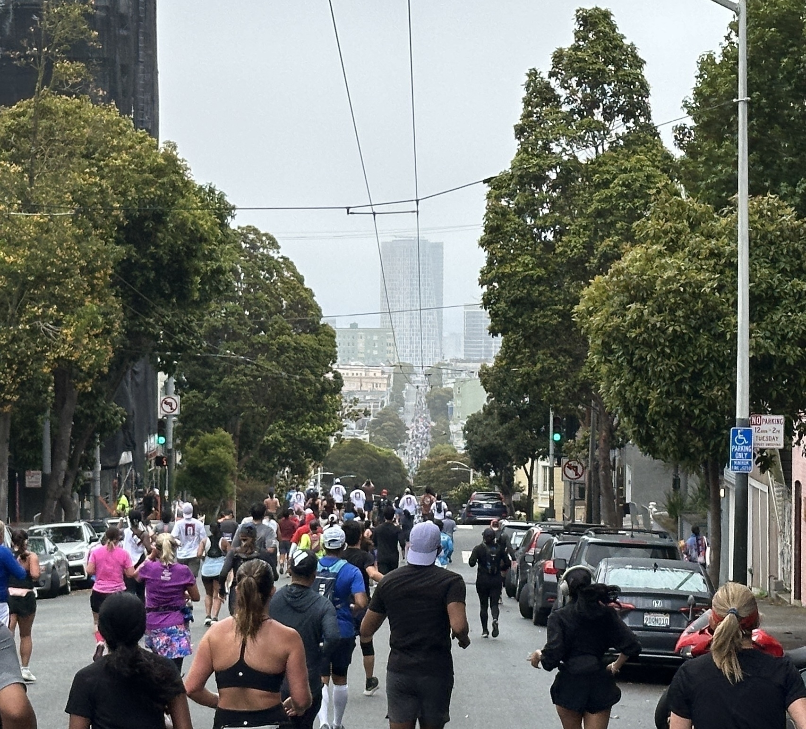
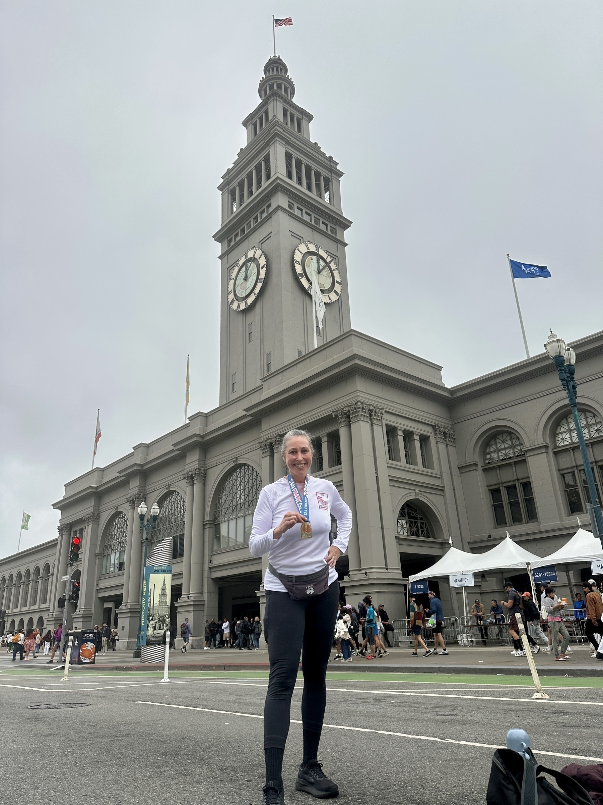
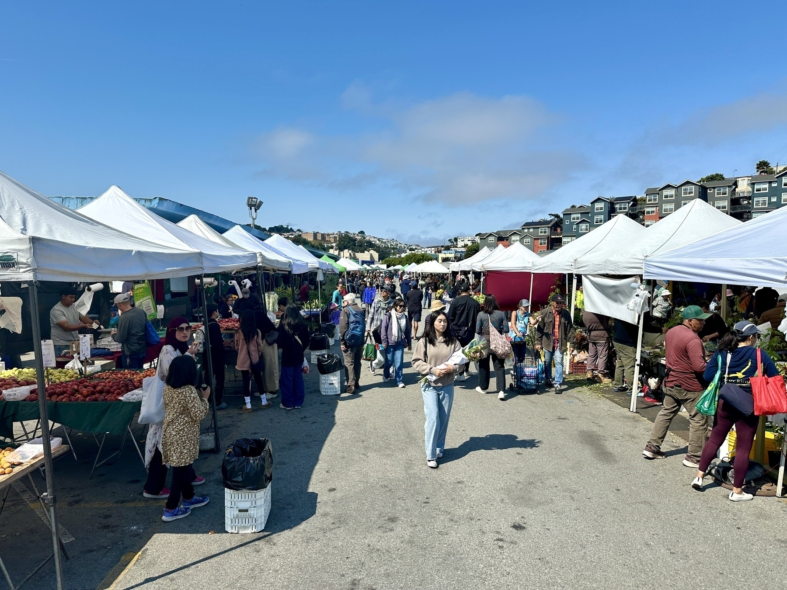
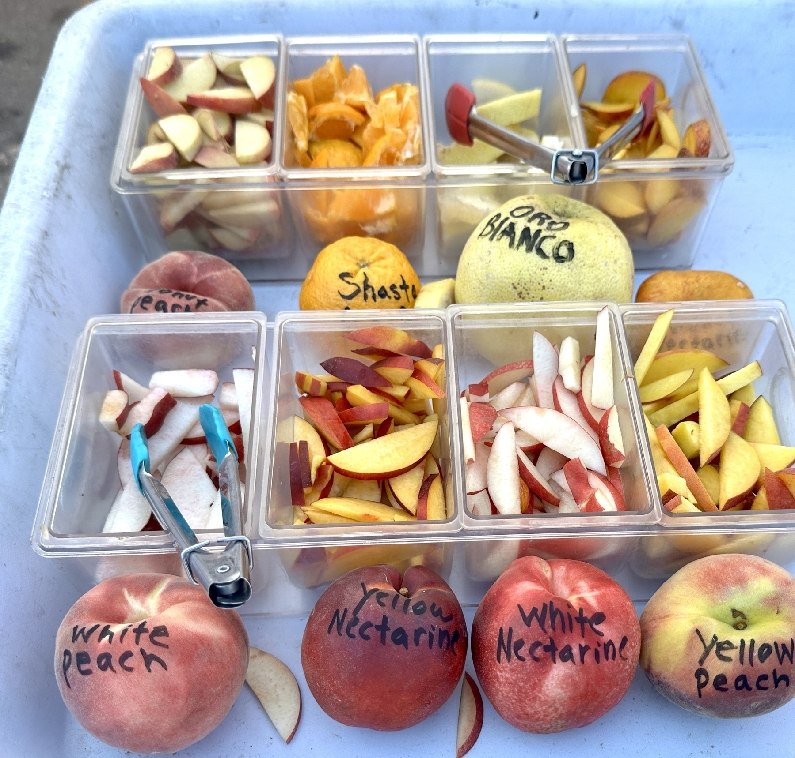
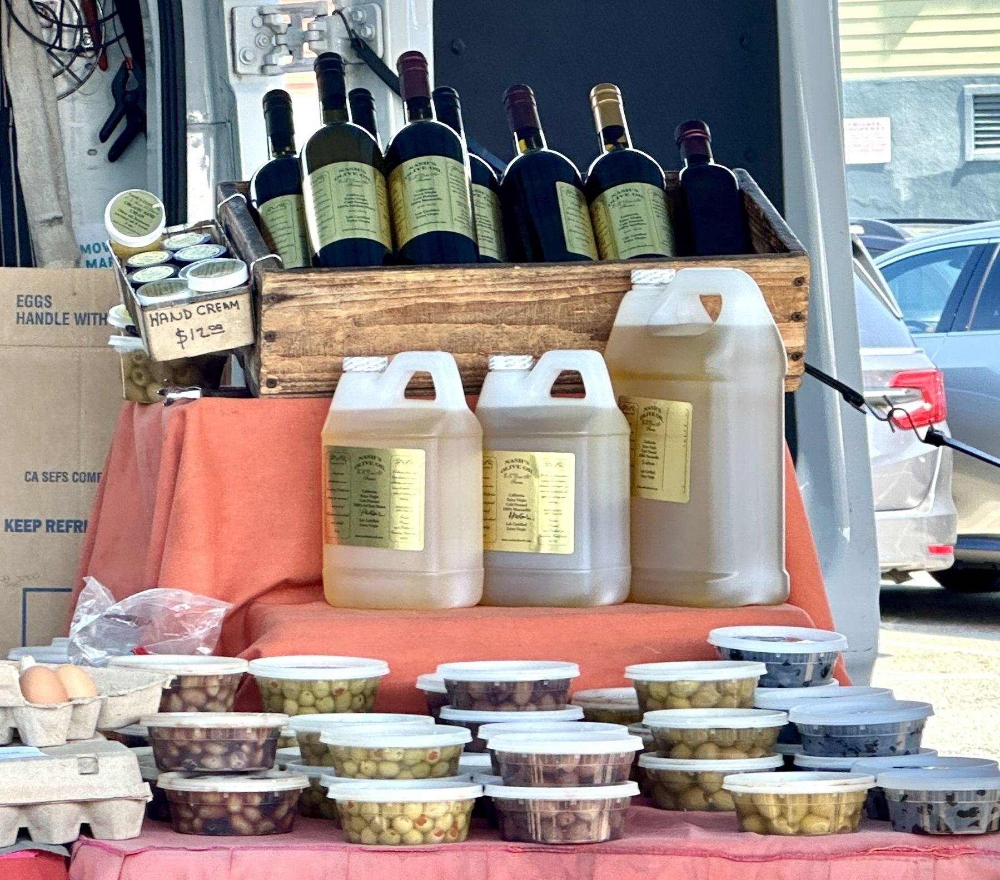
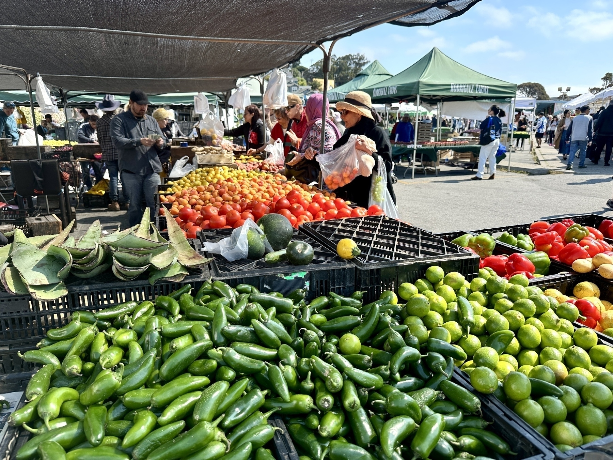
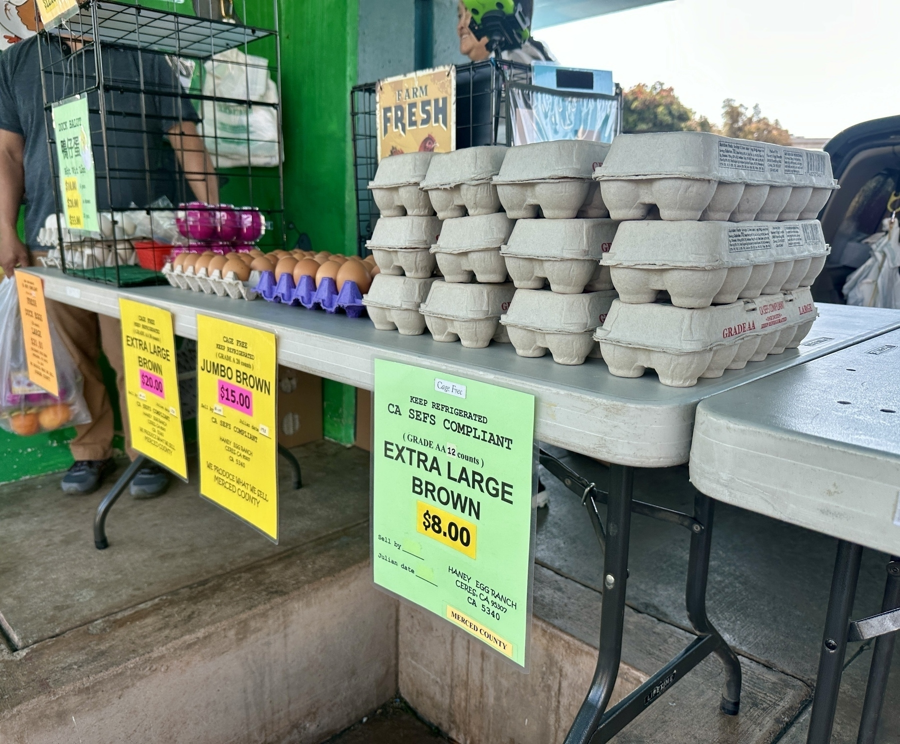
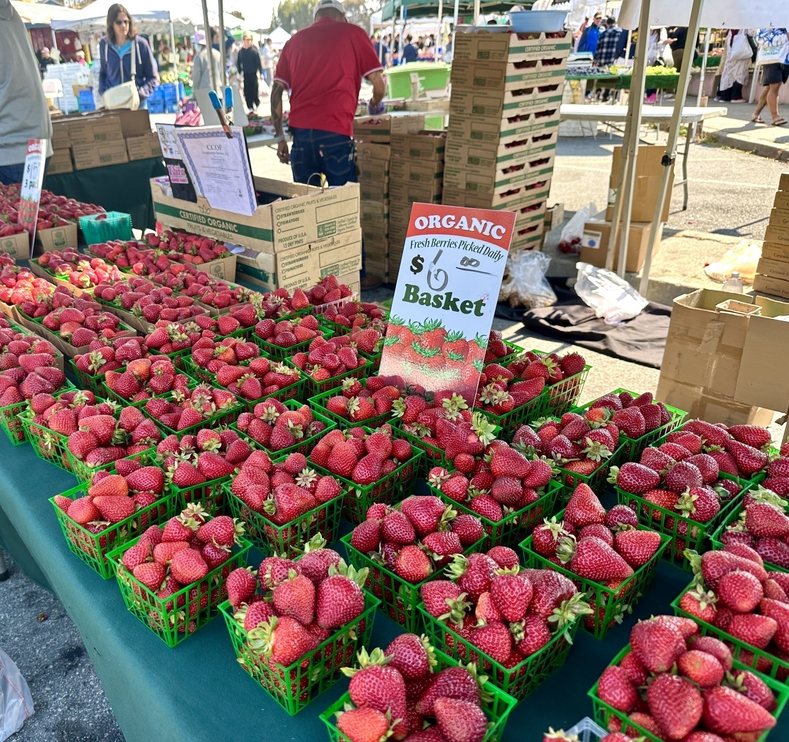
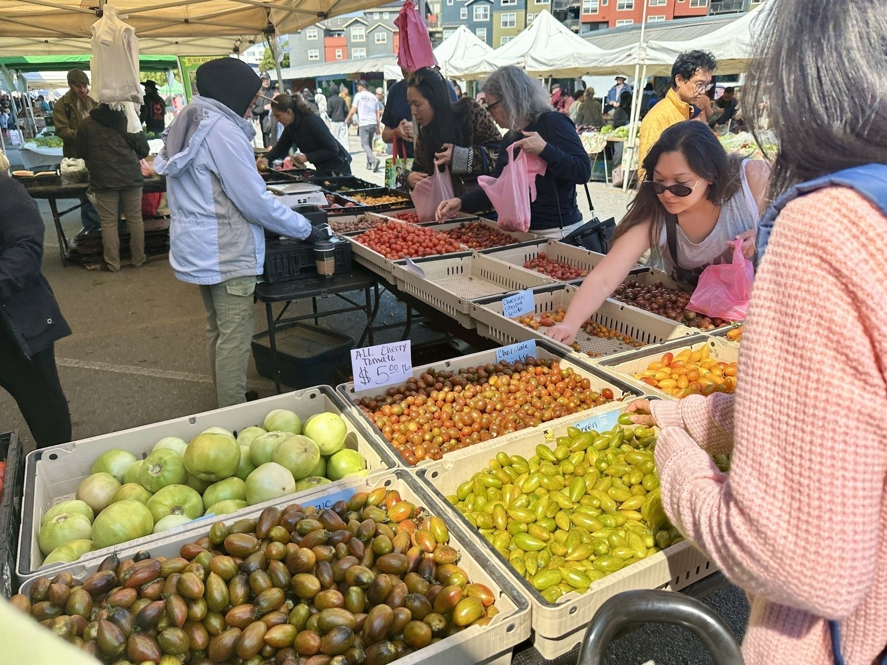

Japan! Photos and My Tips for First-Time Travellers
We’re back! We were awake for about 22 hours for the trip home, I slept 11 hours last night! I’ve uploaded my best photos (still almost 200) to a Flickr album here, although I’m still working on the captions.
**I posted most of them to Instagram as I went, here they are: **
Batch 1: Tokyo Batch 2: More Tokyo Batch 3: Hakone Open Air Museum Batch 4: Hakone Batch 5: Osaka Batch 6: More Osaka Batch 7: Nara Batch 8: Kyoto Batch 9: More Kyoto Batch 10: Last Days in Tokyo
**The fact that Adam speaks some Japanese made a huge difference in terms of how friendly people were and what we were able to do! But as a first-time traveller to Japan, here’s what I learned from this trip and would tell other first-timers: **
- Outside the big cities, many places are cash only. Many places that take credit cards require a plastic card (not phone pay).
- Wear comfortable shoes that you can walk 20K-30K steps a day in. This is our typical travel style, but I think even people who don’t typically walk a lot will walk a lot in Japan. Make sure they can slip on and off easily for no-shoes areas. I wore APL TechLoom Travelers, and I later saw a Skechers knockoff on sale for $50 so I bought those too, and BOY could you tell the difference at about 15K steps in a day. The APLs were comfortable even on hiking/long walk days.
- It rained more than we expected. Bring a good umbrella and waterproof shoe covers if you’re going during a somewhat rainy season!
- Get a Suica card and add it to your Apple Wallet (NOT the Suica mobile app). Go to Apple Wallet —> + —> add transit card —> Japan —> Suica. Then add some money to it before you get there. You can tap this to pay for all local transit systems throughout Japan.
- Once you have the Suica Card, get the SmartX app for Shinkansen tickets (it requires a Suica number).
- In Kyoto, expect many popular sites to be crowded. Don’t go to Arayashima bamboo forest, which is PACKED, look up the locations of other bamboo forests that are just as nice. There isn’t really anything special about Arayashima.
- Japan has almost no animal welfare laws. The number of animal cafes have expanded, and no matter how well a cafe promises to treat their animals, there is no universe in which a wild animal, such as an owl, hedgehog, or otter being handled by strangers all day is a humane environment for that animal. Resist the temptation to patronize them.
- Related: Be prepared to see pet stores selling puppies and kittens. I didn’t expect this and it was jarring and upsetting.
- Carry a small container of hand soap, or sheets of paper soap, as many public bathrooms don’t have soap.
- In Nara, raise both empty hands in the air to show the deer you are out of crackers. Otherwise they may bite you! They understand the “hands up” gesture very well.
- Stairs and escalators have specific rules about where to walk and stand, and it’s not consistent. Look for signs.
- No walking and eating. If you buy food at a street food stall, you’re expected to stand next to the stall and eat it.
- If it’s your first time in Tokyo, stay in Shibuya or Shinjuku where you’ll be near all the major rail lines, which you’ll take everywhere.
- If you’re not from a city, don’t be intimidated about taking transit everywhere. Google Maps has good directions, and things are color-coded and signed well in English.
- As in Europe, many double-occupancy hotel rooms only have a “full” size bed (NOT enough room for 2 people!). I like to use Booking.com to sort for hotels where the bed is either a Queen or King.
- Carry a plastic bag for garbage, as trash cans are few and far between and you may need to carry it for a long time.
- Bring a coin purse or something to keep coins in, you’ll end up with a lot.
- At food establishments, each person is expected to order an item, and they can be very persnickety about insisting on the rule. For example, Adam and I went to a mostly-empty dessert pancake shop on a weekday afternoon, and wanted to share a very large pancake set with ice cream. We were required to order a drink (I got coffee) so we would each be ordering one item. We also encountered a “1 drink minimum” rule at a nicer restaurant where we spent about $50 pp.
- Don’t let reports that Japan is overtouristed stop you. Some of the most popular spots in Kyoto were packed at midday, but that was the only place we encountered uncomfortable crowding. It’s a beautiful and interesting country that’s worth visiting. With the weak yen, it’s also surprisingly cheap if you are used to living in San Francisco!
Link: What Made Blogging Different?
What Made Blogging Different? by Elizabeth Spiers
This piece really resonated for me. I started a website for a niche interest in the early 90s, which became surprisingly popular, mostly because so few people (and definitely few women in their early 20s) were making websites. About a decade later, I started a Blogspot blog (again about a niche interest, again becoming surprisingly popular, mostly due to the dearth of blogs on this subject), but by then the online masses had already started to curdle, and I learned that if you’re a woman online, you better keep it pseudonymous for your own safety and sanity. This piece brought all that back. I miss the blogging days, too. Hence this blog, I guess.
Testing Amazon’s New Grocery Delivery Service
About a month ago, I ordered something on Amazon that was a food item (maybe pecans?) and, on the way to checkout, I was asked whether I wanted to add things like 33-cent avocados (!!!!!), milk, or bananas to the order. I was a little confused, because I had been aware of the “Amazon Fresh” service (in partnership with Whole Foods, which they now own), but that was a separate service from Prime, with a separate annual fee.
I decided to try it out to see what happened— and who could resist 33-cent avocados? I added other items to get to the $25 minimum. I was offered a choice of 2 delivery windows: 5p-9p that evening, or 4a-8a the next morning. The items were exactly what I ordered and showed up on time.
I learned later that Amazon is testing this service, included for Prime members, in select cities (San Francisco being one of them). The goal is to compete with companies like Instacart and Wal-Mart, which apparently also offers grocery delivery.
I never use Instacart because it ends up being more trouble than just going to the store. Even if I add substitutions for every item and detailed instructions when I make my list, the shopper ends up texting incessantly during the trip (while I’m in meetings, which is always), half the time things on my list are unavailable, and some of the subsitutions are wrong. Amazon didn’t contact me at all during shopping, and presumably, they know exactly what is in stock when you order it.
Overall, it was a great experience, and I’ve used it a few times. I know Amazon is evil, but life is challenging, and this is a very useful tool in a pinch. I actually enjoy going to the grocery store, and there are both a Safeway and a Whole Foods within walking distance of my house. But work has been crazy lately, and this has been particularly useful for when we’ve run out of something midweek. I’m interested in seeing where it goes.
San Francisco Marathon - City Half (2025)
I ran the “City Half” of the San Francisco Marathon this weekend, which is the second half of the full marathon course. You can also opt to do the first half, which goes over the Golden Gate Bridge and back, but that’s the course I’ve done multiple times as part of the Golden Gate Half, which happens in November. The City Half has the advantage of a luxurious 8:30am start time (the first half starts at 7:00am, and the full marathon starts at 6:30am). I woke up before my alarm, which was nice, because the worst part of running a race is always having to get up at a ridiculous hour.
The course started at Ocean Beach, looped around Golden Gate Park, went southeast through Dogpatch, and ended at the Ferry Building. It was a very fun course, with only a few not-too-steep hills. It was very foggy, but not too cold, at the starting line.
A benefit of going through the city was that a lot more spectators than usual were out, given that it went through neighborhoods where people lived. My favorite was a guy playing a tuba in the middle of Guerrero, and someone with the sign “YOU’RE RUNNING BETTER THAN THE U.S. GOVERNMENT!” Running across it also really helps you appreciate how small San Francisco is.
Going down JFK Drive in Golden Gate Bridge also allowed me to see the now-finished sea serpent sculpture that’s near the Prayerbook Cross waterfall. It looked super cool!
I placed 19th in the women 50-54 category, but I’m always just trying to match or beat my previous time. The only bummer about the race was that it wasn’t particularly well-organized – there was only one sugar gel station that I saw (luckily I brought my own), and the gear pickup at the end was a disaster. We waited almost an hour to get our stuff! Anyway, it was still a great experience, and I have another finisher medal for my shelf.
"Too Much" on Netflix is the Best Show I've Seen in a While
This show is such a gem, and I want it to get the attention it deserves! It’s written by Lena Dunham and her husband as a semi-autobiographical story about their relationship. It stars Meg Stalter from “Hacks,” who is hilarious, although it’s not a straight-up comedy – there are plenty of dramatic and poignant scenes. It made me cry multiple times.
I feel like the show got some negative reviews from people who don’t like Lena Dunham and used the opportunity to work out their own issues about her, or people who were expecting it to be more of a comedy, but I think this New Yorker review was pretty accurate.
Part of why I loved it is that it’s ultimately a show that very effectively communicates how we all have a lot of baggage from our childhoods, past relationships, etc., and often what we think of as those special “you know it when you meet THE ONE” romantic feelings are the result of being drawn to partners who help us heal that damage, even if we’re not necessarily conscious of it.
I also like the way it portrayed flawed characters who are capable of change – both Jessica and Felix are very flawed, as are most of the people in their orbits – but the show doesn’t condescend to any of them, and doesn’t “punish” them for their issues. Instead, it portrays them all as deserving of love and friendship (honestly, even Zev). The show also illustrates the way that people we think of as “villains” in our own personal stories may have a very different perspective. I thought the Wendy character arc was particularly satisfying and surprising.
Finally, it was wonderful to watch a female character who is not a size 2, but has a positive self-image and is not insecure about her weight. She’s also ambitious and very good at her job, which again, is unusual for shows with young women at the center.
The writing is excellent, and it’s definitely not a “two screen” show – there is a lot of subtlety in the dialogue and reactions that is easy to miss. I watched it through twice, because so much of it is told in flashbacks, and I picked up a lot of nuances the second time around, after I knew what was going to happen.
As a bonus, the soundtrack is incredible, and there are a ton of charming cameos. Richard E. Grant as Jessica’s boss was my personal favorite, as was Andrew Scott (from “Ripley”) as the narcissistic director. It’s just a wonderful show. It’s 10 episodes, ranging from 30 to 50-ish minutes, so not a huge time commitment. Just watch it and then we can talk about it!
The Incomparable Alemany Farmers' Market
I’m always shocked when someone who lives in San Francisco tells me they’ve never been to the Alemany Farmers' Market. It’s the biggest, cheapest, and most fun farmers' market in the city. I haven’t been to one anywhere in the Bay Area that compares.
You can find every fruit and vegetable that’s in season, and discover new varieties you’ve never heard of – the one that was new to me today was the “Snow Leopard Melon.” Vendors are often happy to talk about what they have on offer and give you a free sample.
It takes place every Saturday morning, year-round, and is usually still selling until around 1pm. Late-comers have slimmer pickings, but can often get fantastic discounts as farmers try to unload the remainder of their stock that would otherwise have to be thrown into the trash or trucked back to the farm.
In addition to fruits and vegetables, you can get fresh bread, eggs, mushrooms (the generous bag of “ugly” Lion’s Mane for $20 is a steal!), orchids and other plants, cut flowers, fresh juice, honey, and olive oil. It’s worth a trip, even if you don’t live nearby, although DO NOT drive unless you plan to park several blocks away and walk over. The parking lot and intersection right in front of the market are a disaster if you’re in a car. The 23, 24, 8, 44, and 67 bus routes all stop nearby, and there is plenty of bike parking near the bathroom building.
    Success, Finally! Vegan Ice Cream Experiment #5
I finally did it! I successfully made a good vegan ice cream base!
As I’ve been experimenting over the course of this project, a lot of the information I found online and in books seemed to orient around the goal of making a vegan dessert that tasted good – often, a somewhat creamier version of a sorbet. But this was never my goal. I wanted to see if I could make a vegan ice cream that matched my standards for my traditional ice cream recipes: Not just enjoyable to eat, but scoopable right out of the container, with a creamy mouthfeel, and a bit of a “bite” (i.e., doesn’t just melt in your mouth immediately). I blended the following ingredients and heated them to almost-boiling on the stovetop:
- 340g of Oatly Barista style oat milk (available at Rainbow Grocery)
- 460g Califia Farms Heavy Whip (available at Rainbow Grocery)
- 12g soy lecithin (purchased online)
- 60g NOW brand coconut milk powder (purchased online)
- 200g sugar
- 50g corn syrup
- 50g dehydrated glucose DE42 (purchased online)
- 25g inulin (purchased online)
- ¼ tsp. Locust bean gum (purchased online)
- ⅛ tsp. Guar gum (purchased online)
- Pinch of salt
- 1 tsp. Ube extract (Butterfly brand) (purchased online)
It turned out great! I’m not sure how often I’ll make this, but I’m glad to have the option. It was a fun challenge.

I Got Invisalign and I’m Going to Tell You About It
I had braces when I was a kid, but nearly 40 years later, my teeth have moved enough that they’re causing problems, so I started doing Invisalign to get them back into place (and will eventually have a retainer to KEEP them in place). My course will be short — only about 3 months — but people have asked a lot of questions about them, so I figured I’d share my experience.
-
You really do need to wear them 20-22 hours a day. You only take them off to eat.
-
While wearing them, you’re only supposed to drink water. That means no coffee, tea, etc. unless you take them out.
-
EVERY time you put them back in, you’re supposed to brush and floss your teeth. That means, for example, if you go out to dinner with friends, you’re bringing a toothbrush and floss and ducking into the bathroom after you finish eating, like a weirdo.
-
If you remove your aligners, say, for a special event, you will still have the 10-12 clear “nubs” that are glued to the outside of your teeth for the duration of the treatment (these are what allow the aligners to grip the teeth and move them).
-
Lipstick sticks to the aligners much more than to natural teeth. I have gotten into the habit of compulsively running my tongue along the front of my teeth to clean them.
-
Starting a new tray is uncomfortable. It’s the same feeling you used to get when you’d go to the orthodontist to get your braces tightened. Your teeth just ache all day.
-
Hopefully you end up with straighter teeth that last longer than they might have if they were misaligned!

Vegetables Ranked From Best to Worst
- Avocado
- Peas (fresh)
- Beets (fresh, roasted)
- Asparagus
- Celery root
- Tomatoes
- Corn
- Sweet potatoes
- Red/yellow/orange bell peppers
- Lion’s Mane mushrooms
- Butter lettuce
- Green onions
- Garlic
- Leeks
- Shallots
- Artichokes
- Carrots
- Oyster mushrooms
- Kale
- Celery
- Cabbage
- Brussels sprouts (roasted)
- Onions
- Potatoes
- Turnips/parsnips (roasted)
- Green bell peppers
- Arugula
- Portobello mushrooms
- Cauliflower
- Green beans
- Button mushrooms
- Bok choy
- Radicchio
- Okra
- Broccoli
- Bean sprouts
- Fennel
- Butternut squash
- Chard
- Frisée
- Alfalfa sprouts
- Jicama
- Radishes
- Iceberg lettuce
- Zucchini
Things to do in San Francisco
After living in the Bay Area for 33 years, I’ve entertained a lot of guests, so I thought it would be helpful to make a list of ideas for out-of-towners. I’ll try and update this with new ideas when I get them.
- Rent a bike and ride over the Golden Gate Bridge to Sausalito, have lunch, take the ferry back
- Visit the Clare-Lilienthal House
- Go to the SFMOMA, eat lunch in Yerba Buena Gardens
- Visit the Legion of Honor
- Rent a bike and ride through Golden Gate Park from east to west, then south through Sunset Dunes Park
- Walk south down Valencia in the Mission and look at the murals in Clarion Alley, turn east and walk doen 24th Street, with detours along Balmy and Orange Alleys
- Walk along the Land’s End Trail
- Visit the Cable Car Museum
- Have lunch at The Ramp in Dogpatch, then walk through Crane Cove and Bayfront Parks
- Go to Alcatraz, or if tickets aren’t available, just take the ferry somewhere to enjoy the boat ride
- Walk up the Filbert Steps to Coit Tower and then check out the WPA murals inside
- Go roller skating at the Church of 8 Wheels
- Visit the historic ships at Hyde Street Pier Walk along the Embarcadero and stop at the Ferry Building for lunch
- Go to the Conservatory of Flowers
- Check out the sea lions at Pier 39
- California Academy of Sciences, especially if you can go on one of the adults-only nights. Visit the Japanese Tea Garden at the same time
- Combine the Japanese Tea Garden with the SF Botanical Gardens
- Tour Filoli Gardens (south down 280)
My June 2025 Trip to NYC
This was a work trip, as I was here for Chime’s IPO, but I decided to stay through the weekend so I could have Friday and Saturday free to be a tourist. Two full days obviously isn’t enough time for a visit to a huge city like NYC, but I was able to hit some highlights. I hadn’t been to NYC since I was a kid.
I stayed in midtown, right off Times Square. My hotel had a great view.

Times Square was crazy overwhelming. The digital billboards looked much more real than I expected.


On Wednesday, I worked out of Chime’s NYC office downtown, and took a walk at lunchtime to see the “Charging Bull” statue and the Statue of Liberty from Battery Park.


The rest of Wednesday and Thursday were taken up by IPO stuff, although I did become a pro at using the subway (once I found out that every train/direction had a separate station entrance, even if they go through the same station!).

Then Friday and Saturday I was free. Friday I walked up 5th Ave. to the Metropolitan Museum of Art and spent most of the day there. Along the way, I stopped to get a famous NYC toasted bagel with cream cheese. It was tasty, but not really different from other toasted bagels with cream cheese that I’ve gotten in SF?

The Met was great to see, but very overwhelming, largely due to the layout. The rooms are basically laid out as boxes on a grid, but many connecting openings between rooms were arbitrarily closed or cordoned-off, so it was tough to chart a predictable course by which you would see all the rooms. I think I hit most of them, though. I kept getting lost and having to consult my map. I definitely saw their 5 Vermeers!


In the evening, I splurged on very good seats to see “Gypsy” at the gorgeous Majestic Theater. My co-worker, who is a theater aficionado, had seen it our first night in town and said it was one of her top 3 theater experiences ever. It was fantastic! I had no idea who Audra McDonald is, so I got to be surprised by how amazing her performance was.


For my second day, I spent a LOT of time walking, so it’s unfortunate that it rained most of the day. On the positive side, one piece of IPO swag I got was a CHYM-branded rain shell with hood, so I put it right to work. First thing in the morning, I took the subway to Brooklyn and walked back across the Brooklyn Bridge.


After that I wandered through Chinatown and the Lower East Side, checking out some great street art, before taking the tour of the Tenement Museum. I chose the “After the Famine” tour, which focused on an Irish family that fled the potato famine and lived in the building starting in 1869. It was really interesting! There are a number of different tours you can take, focusing on different eras and circumstances.


After that, I headed back to Bryant Park to [redacted] with 25,000 of my closest friends. Apparently they had expected a turnout of 75,000, but the rain kept a lot of people home.


Then I did a lot more wandering around, including checking out Grand Central Station, which was spectacular.


I eventually walked out towards Chelsea to experience the Chelsea Market and walk out onto Little Island, which was surprisingly cool.


I didn’t go up to the High Line because it was still raining, and I was getting really hungry. I went to the charming and delicious Willow Vegan Bistro for an extravagant last dinner in NYC. It was delicious, but not as good as my dinner earlier in the week at all-vegan Beyond Sushi. Now it’s time for me to pack for my flight home tomorrow. I’ll be sad to leave, but I miss the dogs (and Adam too!).
CHYM: The End of an 11-Year Road, and an Exciting New Beginning
Yesterday, I was at the Nasdaq for the first day of trading for my company, Chime Financial. It was truly a surreal moment. After a hectic day of working in the NYC Chime office Wednesday, finishing out all the final legal tasks like the bring-down diligence call and the pricing discussion with the Board (we ended up pricing above our $24-26 range, at $27), we arrived at the Nasdaq Marketsite at 7:45am. There was a green carpet rolled out for our entrance, and a decorated reception area with breakfast. Our ticker symbol, CHYM, was everywhere. I still resent the fact that the ticker CHME was taken by another company (it was my first choice)! There, we chatted and got an overview of how the morning was going to go.
First up, we headed into the television studio for the bell-ringing ceremony (although at Nasdaq, it’s actually just pushing a button). Because it’s live, we did a rehearsal, with our founders, their families, the executive team, and our board all joining our founders on the podium in stages.

Then it was time to actually push the button to kick off the trading day!

After that, we went outside to take pictures in Times Square and see our ticker on all the billboards.

Everyone at Chime had a chance to upload a photo in advance, each of which was shown on the billboards for a few seconds each. Here is me!

We were ready to get back inside to the air conditioning (the high was 89 degrees that day)! We headed up to the room where the person who is matching up buyers and sellers was lining up the first trades. I didn’t realize this was the process, and takes a few hours. He walked us through what was happening on his multiple screens.

While waiting, our CEO and other execs did interviews. I was in the background of this interview on CNBC!

Ultimately, the process was complete and we started trading at $43! Cheers all around, and the show was over. We were all exhausted and emotionally drained, and had several hours before the reception that night. Personally, I took the subway to the north edge of Central Park and took a slow walk back to the hotel (about 4.5 miles). It was very relaxing.

Then it was back downtown (I stayed in midtown) for our reception at Cipriani Wall Street. It was so fun to celebrate together!


Our DJ was Rev. Run of Run-DMC! He was great and got everybody dancing (even me!) with 80s and 90s hits.

Finally, I got back to the hotel and crashed.
I said in the title that this was an 11-year journey for me. Ever since I took my first in-house job at Credit Karma in 2014, I’ve been working at a company that was planning to go public “some time next year.” At CK, we got acquired by Intuit. Then I went to Checkr, which remains a private company. As a corporate lawyer, I knew that taking my company through an IPO was going to be a career highlight… and now I have finally gotten to do it. The best part is that I love my team at Chime, and know that this is an exciting beginning for the company. I can’t wait to see what we do next!
Distance Running
I’m currently training for my 6th half-marathon, the San Francisco Second Half, in July. I usually only do them every couple of years, to make sure I still can, but I’d been wanting to do this race for a while and it always sells out. This year, a co-worker happened to alert me that sign-ups had just opened, so I went ahead and reserved my place. Since I just did the Golden Gate Half (for the third time) last November, I figured I’d just keep up my level of training rather than going back to “normal” and training up again.
Usually when I’m training for a race from scratch, I use the Hal Higdon “Intermediate 1” program. It’s doable with a job, except when you get to about week 7 and you’re doing 7-8 mile runs on a Wednesday. I work out in the morning, so that means getting up at something like 4:30am to do a long run, which isn’t great. This time, I’m just maintaining my regular running schedule, which is generally 4-5 mile runs on Sunday, Tuesday, and Wednesday, and then a 10-12 mile run on Friday (or over the weekend if I can’t get to it on Friday). On the other days, I do yoga or strength training.
I’m trying a new approach this time, which is focused on increasing muscle. I’m doing heavy lifting (heavy for me!) inspired by the “Hit Play Not Pause” podcast, which is geared towards athletic women in perimenopause or menopause. The host talks quite a bit about how women tend to start to lose muscle at our age, and we have to really work to retain it. I bought Bowflex adjustable dumbbells last year (which are fantastic!) and am trying to steadily increase the weights I’m using (I track it via the free Strong app).
I’ve also significantly increased my protein intake, aiming for 1.6g per kg of body weight, which is about 120g/day for me. I eat Greek yogurt every day, nuts, and hardboiled eggs, but I also try to get 3 scoops of protein powder over the course of the day. I was getting whey-based powders because I thought that was all there was, but there is a vegan powder from Naked that I’ve been trying, which is pretty good. I get around 50-60g from stuff I normally eat and then ~70g from protein powder.
I started this approach around the beginning of this year, and my scale (who knows how accurate it is) thinks I’ve gone from 58.2% muscle to 62.8%, so I feel pretty good about that! We’ll see if it impacts my race time.
Vegan Ice Cream Experiment #4
I made another attempt at a vegan ice cream, this time adapted from this Underbelly recipe. The ingredients I used are:
The main differences from the Underbelly recipe are:
(1) I bought cashew milk rather than making it myself. I used the Forager Project brand, which doesn’t contain any extra ingredients, aside from a little bit of oats and salt.
(2) I substituted 2.25g of locust bean gum for his recommended 2.25g of carboxymethyl cellulose, since I didn’t have that on hand. I recognized later that this is probably a failure, as the batch isn’t cooked, so the LBG won’t be activated.
(3) I substituted extra guar gum for his recommended 1.5g of gum arabic, since I didn’t have that either.
(4) Since I didn’t have either of trehalose (10g) or powdered glucose DE40 (60g), I substituted 70g of powdered glucose DE42.
(5) I increased the amount of sugar from 105g to 120g, since Underbelly often complains that most ice creams are “too sweet” (which is, obviously, wrong!) and I wanted to correct for it not being sweet enough.
I flavored it with my standard raspberry flavoring, which is made by buying a 340g bag of frozen raspberries and cooking them on low until they are nice and jammy. Then I used the stick blender to blend them all together. The deodorized/refined coconut oil was new to me, it doesn’t have the coconutty smell/flavor, so makes for a more neutral base.
This turned out more like a sorbet than the ice cream feel I’m going for, although the flavor was good. I’d like to try this recipe again, but with his recommended ingredients (all can be ordered on Amazon), and think about how to make it creamier (maybe more inulin?). The addition of inulin was something I wouldn’t have come up with myself, but Underbelly recommends it as a way to add a creamy “mouthfeel” without the milkfat, even though inulin is a starch and not a fat.

Photo Gallery from Carnaval in the Mission
The Carnaval Grand Parade in the Mission is a super fun event to photograph (and to attend). Most parades are boring, but not this one! So much color, dancing, music, and joy. Here is a selection of photos I took yesterday. I regret choosing to be on the side of the street that was shooting slightly into the sun, but lucky for me, the parade continued well past noon, and the later photos are lit more favorably. All shot on my good ol' iPhone 14 Pro.


Vegan Ice Cream Experiment #3
Unfortunately, I learned that I can only buy Califia non-dairy Heavy Whip at Rainbow Grocery, which is a pain to get to, so I decided to improvise. Working off of the results from my last attempt at vegan ice cream, which was based on my regular ice cream base recipe, I got Silk brand creamer (which did not have enough fat in it) and added 60g of cocoa butter to bring it closer to the fat content in heavy whipping cream (doing the math, it should have been 119g, but that seemed like too much). I also added 50 additional grams of light corn syrup to improve the scoopability. As usual, for the raspberry flavoring, I cooked 340g of raspberries on low until they became jammy.
Ingredients list:
- 340g Oatly full fat oat milk
- 460g Silk Original Creamer
- 60g cocoa butter (bought in bulk at Rainbow)
- 12g soy lecithin
- 60g NOW coconut milk powder for milk powder
- 200g sugar
- 100g corn syrup
- ⅛ tsp. Locust bean gum
- ¼ tsp. Guar gum
- Pinch of salt
- 340g raspberries (cooked separately)
It really seemed like it had too much water in it, so I let the base simmer for about 30 minutes to thicken it up. It was still very liquidy going into the machine, as well as coming out. But the ultimate texture was scoopable right out of the freezer, so a big improvement over prior batches. Unfortunately, the cocoa butter flavor was very strong, and almost drowned out the raspberry. I need to find a way to add vegan fat that’s not cocoa butter and isn’t coconut either (which also has a very strong flavor). I think I’ll go get the Califia Heavy Whip and try using that for the next batch.
Meanwhile, I’m going to bring it over to my vegan friend Nico’s today and see what he thinks.

The 10-Year Odyssey of the Mystery Citrus
For friends who have been following the nearly 10-year odyssey of my MYSTERY CITRUS* tree, I’m excited to report that there are a few tiny, nascent, round fruits appearing on it! Please cross your fingers that they finally make it to ripeness!


*When we bought this house in 2015, there was a small, almost-dead tree that I thought was a lemon tree. It was completely shaded by a huge eucalyptus that was threatening to fall over, and which we quickly had removed. In the removal, they damaged the “lemon” tree further. I decided, now that the tree was actually getting sunlight, that I could bring it back to health.
For FIVE years I fertilized it, watered it, and protected it with a frost blanket when it got below freezing at night. It actually started having some healthy growth. But no fruit. I assumed it was just building up its strength again. Finally, it produced a handful of small fruits, which I was surprised to see were ROUND! But they dropped off the tree while they were still tiny and green, so it was impossible to tell what they were. They obviously weren’t lemons.
In year 6, I was excited to see that it had many small fruits on it, and I had hope that this would FINALLY be the year in which it would keep the fruit on the tree until it ripened, and we could find out what it is. Unfortunately, it was attacked by rats during the night (same thing that happened here), and they not only ate ALL THE LEAVES but also much of the bark off the tree. I had no idea that could happen. Any remaining fruits dropped off. I didn’t know if the tree would survive.
But that little sucker kept hanging on, and during years 7 and 8 it just kept growing more branches and leaves, presumably replenishing its stores of energy, and didn’t produce any fruit. So you can see why I am so excited that now in the 9th year, we may actually see some fruit. I’m crossing my fingers. My guess is that it’s a mandarin orange. But we shall see.

Vegan Ice Cream Experiment #2
For this attempt, a mixed berry batch, I used my normal base recipe, but substituted all vegan ingredients:
- 340g Forage brand cashew milk (left over from last recipe) - substitute for whole milk
- 460g Califia Farms Heavy Whip - substitute for heavy whipping cream
- I would have used 12g soy lecithin to substitute for the egg yolks, but didn’t have any, so I used 1g of xanthan gum
- 60g NOW brand coconut milk powder for milk powder
- 200g sugar
- 50g corn syrup
- ⅛ tsp. Locust bean gum
- ¼ tsp. Guar gum
- Pinch of salt
Then, as I would for any berry ice cream, I took 340g of frozen berries and cooked them for about an hour on low on the stovetop, until they were nice and jammy, blended them separately with the immersion blender, then blended them into the base.
I think this recipe was on the right track. For how little coconut is being used, I’m still surprised at how much it tastes like coconut. It was still a little hard, and not creamy enough, so I think I need to use a creamier plant-based milk (I’ve heard barista-style oat milk is a good substitute), some dehydrated glucose in addition to the corn syrup (maybe 50g?), and maybe a little cocoa butter (20g?). But I feel like I’m in the ballpark and will be able to improve on this.

How to Discover New Music in Your 50s
A lot of these posts end up being responses to questions I get asked often, so I think I’m writing them to memorialize the answers somewhere, so that after I’m gone, the “wisdom” (???) will live forever somewhere, on the internet, where nothing ever dies.
Adam and I have been recording a music podcast for 11 years — we’re currently at 230-something episodes — in which we find one recently-released album to discuss in depth. I do most of the work of finding potential candidates, because I already spend a lot of time and energy on discovering new music. People sometimes ask how I discover new music, because they find themselves listening to the same old albums over and over again. I always say, first off, that it kind of has to be a hobby that you’re willing to devote time to, and if your main hobbies are raising children and/or working too much, it might just have to be something you leave behind for the time being (or just listen to your friend Gaelen’s recommendations!). ;) Anyway, here are my methods:
REVIEWS AND BLOGS
I follow a lot of websites (via RSS or social media, like Bluesky) that review and recommend music. I’ve gotten pretty good at being able to read a review and determine if it’s something I’m probably going to like. Sites I read religiously are Pitchfork’s new album reviews, Stereogum’s “Heavy Rotation” section, Paste Magazine’s Music section, and the See/Saw “Punk This Week” newsletter. Sites I read less religiously are NPR Music, the “indieheads” subreddit, Rolling Stone, and Brooklyn Vegan.
PODCASTS
I listen to a few music review podcasts, including All Songs Considered, See/Saw, Rolling Stone Music Now, and KEXP’s In Our Headphones. Of course, I think Adam’s and my own podcast, For the Record, is a pretty good listen!
RADIO STATION PLAYLISTS
I don’t actually listen to the radio much, but I look at certain radio station’s charts to see what’s popping up. In particular: KEXP, BFF.fm, and KCRW.
LIVE MUSIC
For more than a decade, my biggest avenue of musical discovery has been going to the South by Southwest music conference in Austin, Texas every year. SXSW is not a “festival” the way most people think of it, it’s about 1,000 mostly-unknown bands coming from around the world to play at roughly 100 small venues across Austin, to industry people and tastemakers. I spend months in advance listening to the artists who have been invited, and deciding, on the basis of a handful of songs, whether to add them to our schedule. We can usually only see 90-100 artists over the course of the week, but I always leave with new discoveries I’m really excited about. Unfortunately, they are significantly scaling down the music portion of SXSW next year, and making the whole thing overlap with SXSW “Interactive,” which is all the worst tech bros with whom I hate having to share space for the one night it had previously overlapped. So the future is uncertain.
Here at home, I look through the music calendars of every local venue once a month, and put the ones that I think I or my friends might be interested in into a shared Google doc. When someone I’m interested in comes to town, I try and see them live.
PLAYLISTS
Certain radio stations and programs, like NPR’s All Songs Considered, curate “New Music” playlists on Spotify that you can follow. Personally, I have my own “Current Rotation” playlist, which is pretty much all I listen to. As I gather music from the above sources, it goes onto the playlist, and what doesn’t resonate with me gets removed in regular prunings. You can “follow” it on Spotify if you want to see what I’m listening to.
Vegan Ice Cream Experiment #1
After almost 400 batches, I have perfected my homemade ice cream base. As a new challenge, I decided to try and develop a good vegan base.
The main challenge with homemade vegan ice cream is that it’s too hard. It’s a requirement for me that my ice cream has a “chewy” bite to it but is scoopable right out of the container, and every vegan ice cream recipe I’ve tried has needed to sit out for 10-20 minutes to become soften enough to eat it.
The other challenge is flavor. Many bases, like the one in the Salt & Straw recipe book, rely on coconut milk or coconut cream. I love coconut, but it limits the flavors you can make with that base because the coconut flavor is so strong.
So for my first attempt, I tried a Van Leeuwen recipe that I found online. It was intended to be mint chip, but I chose ube as the flavor so I could compare it to my regular ube, which I make all the time.
Ingredients:
- 212g coconut milk (I used Thai Kitchen, unsweetened, canned, but next time I’d use the kind in a carton)
- 212g cashew milk (I got Forage brand at Rainbow Grocery)
- 150g sugar
- 60g cocoa butter (bought as chips, in bulk, at Rainbow Grovery)
- 60g coconut oil (bulk from Whole Foods)
- 2g salt
- 1 tsp. Ube extract (Butterfly brand)
- ⅛ tsp. Locust bean gum and ¼ tsp. Guar gum (my additions)
The instructions are to put the sugar and 20g of water in a saucepan, stir it over low heat until melted. Then add the cocoa butter and coconut oil, let it melt. Finally, add the coconut milk and cashew milk, and hit it with the immersion blender. I added the ube extract at the end. This only made about ½ of my standard batch, so next time I would double it.
I was surprised to find that the cocoa butter flavor was very strong, like white chocolate. The texture was dense and hard and had to sit out for about 15 minutes to soften, but the mouthfeel was very creamy. Adam said “it feels like eating ice cream.”
Nevertheless, the cocoa butter flavor would have paired better with the mint extract (as the recipe intended). It was also just too hard, like an ice cream popsicle. I might try this recipe again, but add corn syrup or dehydrated glucose to try and soften it. I would also use mint instead of ube as the flavoring.
The Big Salad and Avocado Achievements
Every night, Adam and I have a “Big Salad” for dinner. It varies based on what add-ins we cooked over the weekend or got at the farmers’ market, but generally consists of greens, carrots, feta, nuts, the amazing baked tofu that Adam preps on the weekends, chia seeds, tomato, a hardboiled egg, and avocado.
Adam always chops the avocado, and takes great pains to make sure the chopped avocado coheres together in its original shape. This is difficult to do! But he takes great pride in getting it close to perfect.
Tonight’s avocado was rated a 9.5 out of 10, which is the highest rating ever achieved, so I wanted to document it.
Look upon his works, ye mighty, and despair:

The Last Social Media Standing: Instagram
It came to my attention recently that some people still use Facebook. I was a very early adopter of Facebook (as I am for most things), but stopped using it years ago. I have a fake profile I set up when we adopted our greyhound puppy, because that was the only place the rescue group was posting photos, but no one can find me or friend me and I don’t use it to post anything, just to keep up with that group and foster homes that may be needed.
My decision to stop using Facebook wasn’t just because it was destroying America and helped get Tr*mp elected, but because I had accumulated so many “friends” over a very turbulent time in my life, and it felt weird to “unfriend” them, but it also felt overwhelming to see so many updates on the lives of people I had no actual connection with anymore. In a weird way, it made me both (1) guilty for not keeping in touch with them, and (2) anxious that if I ran into them on the street I’d forget I’d seen an update that they had a baby or started a new company or whatever, and I’d reveal that I don’t actually care about what’s happening in their lives anymore.
I generally like social media as a way to keep in touch with friends and family I don’t see often. I did Friendster, and MySpace, and some of the others I’ve forgotten (Orkut? Was that a thing?). But none of them held up over the long term.
I stopped using Twitter when Elon bought it, and I like Bluesky and Mastodon, but I mostly use those to follow strangers and post my own dumb thoughts for strangers. It doesn’t feel “social” because it isn’t people I actually socialize with. I tried out Threads, but it felt extremely Facebook-coded, and I soon lost interest.
I actually like TikTok (it’s GREAT at showing me wildlife rescue and dog training videos I’m going to like), but I don’t really want to watch videos, generally, and I rarely use it.
I started using Tumblr because, in 2009, pre-iPhone, it was the one service that let me easily post to my photoblog by emailing photos to a specific address from my Palm Treo 650. I still use it for that purpose (but now I use the app!), but I don’t follow other people on Tumblr, or use the app for anything except posting photos. So I don’t really consider it a “social media platform,” since that’s not how I use it.
For me, the last “real” social media platform standing is Instagram. I started using it very early – this is my first post, from October 2010, and this is the first picture I posted of my now-husband, in February 2012. It’s the one thing I still use, and the only social media platform I’ve used for 15 years! I like it for sharing photos with my friends and family (it’s really the only site they still post photos on), but I also follow some wildlife rescues, other greyhound and whippet accounts, accounts for organizations like the SFMOMA and the parks department, and interesting celebrities like AOC and Miranda July. If you switch to the “Following” feed by tapping on the Instagram logo in the top left, you don’t get all the nonsense from accounts you don’t even follow. I consider it the only “real” social media platform (at least, for me) because it’s the only place I follow friends and family, comment on their posts, and share photos intended for them (rather than for strangers, which is the case with my photoblogs).
Why do I like Instagram? I guess because I’ve always taken a lot of photos (since high school, way before digital!), it’s my way of interpreting the world. I’ve heard people say they’ve stopped using Instagram because they didn’t want to take themselves out of the moment by documenting it… but I’ve always documented everything with photos. It doesn’t take me out of the moment, and it’s actually part of my enjoyment of the moment (I mostly take quick candids, I don’t spend time staging or framing anything too elaborately). I like taking pictures, and I like seeing pictures from other people.
Ryan on Garbage Day summed it up pretty well in this post. I don’t use Reels or know how to specifically look for Reels on Instagram, but the rest really rang true. I’m genuinely surprised that Instagram has been the one that has stuck around for me, but I still hope we’ll eventually get something better.
Knitting: “Love Note Sweater” from Tin Can Knits
I recently started knitting sweaters again, which I hadn’t done in about 20 years (I’ve still been knitting a bit, but I’ve stuck to baby blankets, scarves, and afghans, mostly as gifts). I recently completed my second sweater, the “Love Note Sweater” from Tin Can Knits. The pattern is available here for $9, and what I particularly love about Tin Can Knits is that they have an iPhone app, which allows you to select your size, and then it shows you ONLY the instructions for your size. Super useful, and makes following the pattern much easier. You can also enter your own personal notes.

I chose this design after seeing an already-knit example in my friend Kelley’s yarn shop, The Royal Bee Yarn Company, and selected one of her own DK-weight yarns to create it. The color is “Luscious Marmalade Lantana.” Kelley’s yarns are non-superwash merino wool, so they feel great on your hands while knitting, and produce a beautiful garment. Because they’re hand-dyed, even the “solid” colors have a little variation to them, which I think looks great. I love Kelley, so it’s also nice to carry a little bit of her with me when I wear it.
Skill-wise, this project was a bit challenging for me. It’s knit from the top down, and I had to restart the project 3 times. The first time, I made what, in retrospect, is an obvious mistake: Because the lace pattern consists of increases and decreases that net out to zero each time the repeat completes, I didn’t think about the fact that if I ended the pattern in the wrong spot, I might be adding or subtracting a stitch, throwing the entire pattern off. So I started again a second time, but I still kept making mistakes in the lace pattern (this time I stopped and re-started more quickly!). The third time was the charm: I made a couple of small mistakes in the lace pattern, but I think only I would have noticed them.
I generally find sweaters to be too short, so I added 6 inches to the body length, and I added a couple of inches each to the sleeves. I intended for them to reach to the wrist, which obviously isn’t quite the case. At least they are even! I also dropped the “high-low” hem at the bottom, which I generally don’t like, and made the hem even. I’m really happy with how it turned out.
The Lost Kingdom of Bike Messengers
Back in the Before Times — and this time I’m talking about back before the turn of the millennium — we used to have bike messengers downtown (San Francisco, but I assume most other cities).
In the 80s and 90s, it used to be considered a relatively punk job, if you had to have a job. Your typical bike messenger had a lot of tattoos, a non-conforming haircut, and was kind of an asshole. Different groups had their own zines. They helped get Critical Mass off the ground. Some of them rode fixies. They ran red lights and sometimes rode on the sidewalk. They were almost all male. I’ve dated more than one person who used to be a bike messenger. It was… a type.
You used to see them zipping all over the city, and at lunch time, congregating in a few specific places, like that building that used to be a Shaper Image (the photo below is from foundsf.org):

This was back in the day when many documents required “wet-ink” signatures, and part of the job of any law firm’s staff was calling up a bike messenger to have documents delivered several blocks away. It was an essential service.
But then then the use of Docusign became widely accepted, even with financial services companies and other old-school holdouts. There was a pandemic. Electric mopeds became available and affordable. Here in 2025, I no longer see bike messengers downtown (or at least, they’re not congregating in places where I might see them).
What I do see is a lot of people on electric mopeds with the square boxes on the back. I believe they’re mostly delivering food. They don’t seem to hang out together or have a culture, although they do still run red lights and ride on the sidewalk.

Part of my desire to re-start a text blog was to write down things that might be forgotten by history, that I personally experienced. So that’s what this post is, I guess. I was there when bike messengers were cool.
UPDATE: It appears the San Francisco Chronicle has picked up on this too.
Lovely Article on Tony Corten’s Public Memorial
In case this one also gets paywalled, I am reproducing it here: www.coastsidenews.com/community…
Coastside News: ‘Rest well, my dear friend’ Remembrance of Tony Corten
By Peter Tokofsky Apr 1, 2025
Well over 1,000 people gathered Sunday afternoon in the Terra Nova High School gym to share memories of Anthony Corten, the principal of Ocean Shore School in Pacifica who passed away last month.
The Terra Nova gym was filled with people whose lives were touched by Tony Corten. While the room was just large enough to contain the crowd of students, families, friends and Pacifica residents who came to pay respects, the space could not contain the outpourings of love and affection for a man who, as speaker after speaker made clear, embodied kindness and who was so much more than any one label could capture.
“He was so talented – to the point of annoying. Whatever it was, he was good at it,” Dawn Mermer told the crowd in her introductory remarks. “He was also the funniest person. He could take the most mundane thing or situation and turn it into something hilarious and joyful.”
The afternoon celebrating a life featured musical interludes including students from Ocean Shore and Sunset Ridge Schools singing the Beatles “In My Life”, and Erin Brazill and Erma Kyriakos performing “Let It Be” and Leonard Cohen’s “Hallelujah” with the crowd joining in.
Corten’s love of the Fab Four was well known, but many in the crowd might not have known that before becoming an educator he was one of the premier drummers in the United Kingdom. In 1997 his band Flyscreen opened for No Doubt on their UK tour when their single “Don’t Speak” hit number one on the charts.
CJ Valenti, owner of Pacifica music venue Winters Tavern, saw both sides of Corten. As a music presenter, he said after the memorial, he always hoped to host a Flyscreen reunion but was also happy any time Corten got behind the drum set for open mic night. Valenti’s greatest appreciation, though, was as a parent of two boys going through the challenges of COVID and a divorce. “He was there every morning, and he knew every child’s name,” Valenti said about his kids’ principal. “You could tell the kids respected him and they all liked him.”
In her remarks, Brazill repeated that Corten “was one of those people who was good at everything he did. He was also one half of the most beautiful marriage I’ve ever seen in my life.”
Gina Arguello, who co-taught a 4th-grade class with Corten before he became an administrator, described him as a big brother and recounted many of the pranks he executed over the years, including sending unexpected things such as a bell or “actual trash” through school district mail, sending student messengers to other classes with random and useless messages, taking another teacher’s class into his room for 45 minutes without telling anyone – just to cause chaos. “Mr. Corten made school fun,” she said. “He liked what he did and enjoyed it with a passion.”
Johnny Sideris read letters from Corten’s parents and from his wife, Kelley, who thanked everyone for their love and support. In her letter, Kelley recounted how she and Tony would high-five and congratulate themselves for having each other. “I will carry him with me always.”
“Everybody here loved Tony. He was an inspiring educator. His passion for making the world a better place shone in everything he did,” Ellie Cundiff said. “His laughter is in our hearts. His kindness will live on. Rest well, my dear friend.”
Following the remarks and performances, the crowd gathered outside on a suddenly sunny afternoon for donuts, bubbles and more music.
Before leaving, Pacifica City Councilmember Mary Bier remarked, “It’s all about love. No matter what is happening around us, it doesn’t matter. We just have to love each other.”
And in the end The love you take Is equal to the love you make – The Beatles, “The End”
A Beautiful Memorial for Tony Corten
Yesterday, the Pacifica schools community pulled together, with the help of Kelley and all of our friends, to hold the public memorial for our good friend Tony Corten.

It was truly touching to see a high school gym completely filled with the teachers, staff, and families who knew Tony during his 17 years teaching and in school management.

There were so many sweet remembrances and, of course, performances of Beatles songs. Some of the children from the school where he was principal (Ocean Shore Elementary) sang “In My Life,” which made everyone tear up.

At the entrance, there were multiple big poster boards of messages the kids and adults have been writing about Tony. He was such a big personality, such a favorite of all the kids, and you could tell the outpouring of love was genuine and effusive.


Of course, it ended with the treat Tony was known for bringing to every party (and of which he has a tattoo): Boxes of pink sprinkle doughnuts.

Most touching, for me, was Erin’s speech, which she ended with, “I know that Tony had been deeply stressed lately. He was more blue, and more distant… I wish I had not been intimidated by his sadness, and insisted that he open up to me, or Kelley, or somebody. I know I’m not alone in feeling this way. Tony’s last gift to us is to have the resolve to check in more on each other. To ask difficult questions. To offer hugs, hold on a little closer, to be more tender and patient with little children, and our brothers and sisters in life. To ask how everyone is doing, and really listen closely for the answer. That is his gift to us…. Your death made it more clear to us than ever that we are the fabric that holds us together.”
After the public memorial, Stacey and Stef were kind enough to hold a gathering at their house in Pacifica, just for our chosen family, so that we could remind each other to do just that. I’m sure we will do even more of it at the private memorial coming up in a couple weeks.
What I Learned During My First Year of E-Bike Commuting
I got an e-bike and started commuting to work about a year ago, and I’m sharing what I learned along the way, in case it’s of use to someone considering it.
-
You will need a lot of accessories. My eyes water in the wind (and going fast creates a lot of wind), so I found that I had to get dorky-looking clear glasses that block the wind. I found I also needed wind-proof gloves, because going fast in the cold morning air was freezing my hands. Same with a windbreaker. A LOUD electric horn was a must, because at e-bike speeds, you need people to hear you from a farther distance away. I needed pants straps for when I wear wide-legged pants. Then of course you’ve got the strong, expensive locks (I have a Litelok and the Kryptonite heavy chain) needed for a multi-thousand dollar vehicle.
-
You may need to do your hair and makeup at your destination. This is a big one, especially if your routine is complex, although it may not be the case if you live in a flat city. In San Francisco, I sweat going up a steep hill (often against the wind) even if I max the boost and go slowly, and my eye makeup was running by the time I got to work. Now I bring my makeup with me and do it when I arrive.
-
A surprising number of pedestrians don’t pay attention. When I first started cycling, I was shocked at how many people step out into the bike lane or street while looking the OPPOSITE WAY of oncoming traffic. I’m also surprised by how many people wear all black while walking at night. This is a big reason why you need the loud horn.
-
If you bike in urban areas, you will probably want to go overboard to be visible. San Francisco has a terrible track record of keeping pedestrians and cyclists safe, and as you ride, you will see how many intersections force cyclists into blind spots and too-narrow, unprotected shoulders. I have a fluorescent yellow helmet, a fluorescent yellow windbreaker that reverses into reflective fabric for night time, a flourescent yellow backpack cover, reflective pants straps, and a bunch of extra lights. The photo at the bottom is what I look like from behind.
-
You will find you use the e-bike a lot more than you expected. I just bought it for commuting, but in the city, riding a vehicle that goes almost as fast as a car but doesn’t need to find a parking spot (at least in San Francisco, there is bike parking everywhere) makes it my preferred method to get around if I’m not bringing the dogs. I have two wire-basket panniers on the sides, plus a basket in the front, so I can carry a decent amount of groceries or whatever else I need.
-
Yes, people really do steal e-bikes from inside of garages. I have had more than one friend to whom this happened! Theft is a real problem. I have an insurance policy for my bike that covers theft (our homeowners' insurance wouldn’t cover it), and we also installed a concrete anchor into the garage floor so I can lock it to the anchor at night. I hide the keys in a place that would be difficult for anyone to find if they broke into the house.
-
E-biking is actually exercise! (At least in San Francisco.) Riding my e-bike feels so easy versus the regular bike, that I assumed the activity level would be roughly similar to walking. Actually, my heart rate gets up to around 110-120: Higher than walking, lower than running, roughly similar to a weightlifting session for me. It’s a nice bonus!

A Requiem for South by Southwest
For a decade, Adam and I went to South by Southwest for music every year. It was where we did most of our music discovery for the year. For those who aren’t familiar, people often refer to SXSW as a music “festival,” which isn’t really accurate. This isn’t a Coachella-like experience. It’s a music discovery conference that used to be mostly for people in the industry. The SXSW organizers would curate a list of around 1,500 mostly-unknown artists from around the world, and this was their chance to play in front of critics and people who run labels and venues – music industry tastemakers – in very intimate settings. Just about every bar, church, and coffee shop in downtown Austin is turned into an ad hoc music venue for the 6 days of showcases. I’ve seen artists who went on to become huge in a room with 50 people in it.
Planning our schedule would involve months of research ahead of time. On the basis of hearing a song or two, or someone else’s recommendation, the bands we wanted to see would go on my spreadsheet. Because the showcases are happening simultaneously from about noon to 2am every day, I would put about 200 acts on my list, but we would only be able to see about 100 of them. But still – 100 new bands! And several of them would always end up being favorites that I followed for years.
We kept track of our contemporaneous notes and photos via a Tumblr blog I set up in 2013. Looking through the blog, there are some I’ll never forget, and some I don’t remember at all. The best part of the event was that because bands played 40-minute sets back-to-back, we’d often find that a particular venue was off-schedule, and we would end up seeing someone that wasn’t even on our list, who turned out to be amazing.
Anyway, the SXSW organizers announced last week that they would be dramatically curtailing the event. The Music portion would be happening at the same time as “Interactive” and “Film,” which is terrible because the 1-2 nights that Music overlaps with Interactive were always the worst. You’d have tech people standing in front of the stage, yelling over the band, trying to “network.” The idea of having them around for the whole Music week is enough to make me not want to go back.
NPR’s “All Songs Considered” did an episode about what’s happening, their SXSW memories, and what these changes mean for the future of independent music. There was also a good article in the Texas Monthly, which is paywalled, so I copied it to a .doc here: “SXSW is Finally Changing. Is It Too Little, Too Late?"
The reality is, SXSW was already ending. One of the big issues is that Austin has exploded in growth during the last couple decades. SXSW used to take over Sixth Street, with all the venues adjacent to one another. But as Austin became more of a “party town,” where legions of basic bitches and bros would come for their bachelorette parties, etc., the Sixth Street bars found that it was more lucrative to just stay open as a bar rather than serving as a SXSW venue. As a result, the venues ended up being pushed farther East and South, which defeated the whole purpose of having them very close together so you could run from venue to venue to catch different performances. Having to walk a mile between showcases really puts a damper on both planning and spontaneity. And walking around a city where hordes of people were just there to get drunk was a far cry from the wonderfully weird Austin of the 90s, when SXSW got started. “Slacker” is now a historical documentary.
We hadn’t been to SXSW since 2023 because in 2024, I was leaving for my month-long 50th birthday trip in May, and this year (2025), I am working on a big project that will be in crunch time during the time that SXSW occurs. We had been excited to finally go back in 2026, but it sounds like the event will really be a shell of its former self. Maybe a smaller SXSW will be better – it had gotten a bit too big. Maybe the reduced scope will drive away the “Interactive” people and only the music (and film!) die-hards will show up. Anyway, we have time to decide.
Rules for Bicyclists that Apparently Need to be Articulated
-
Go with the walk signal. It’s the law in California that bikes can go with the pedestrian “walk” signal. Don’t just sit there until the green light so that everyone has to go around you. In urban areas, the “walk” signal turns green before the car green as a way to increase safety for pedestrians and cyclists, and if you’re waiting to go at the same time as the cars, you’re making everyone less safe.
-
Ride to the right. Especially if the bike lane is narrow, leave room for people to pass on the left if possible.
-
If you’re on a “regular” bike, and people are stopped at a light, don’t ride in and stop your bike ahead of the e-bikes because your fragile male ego (it’s ALWAYS a man) can’t handle the fact that others are ahead of and/or faster than you. Non e-bikes take longer to get going, and when it’s time to proceed, you are forcing the e-bikes to awkwardly go around you, often having to veer into the car lane.
-
Be mindful of others when parking. If the bike racks are close together, don’t lock your bike in a way that blocks others from removing their already-parked bikes or accessing their locks.
-
Don’t swerve unpredictably. Especiallly on Market St. at commute time, people are riding relatively closely together. Ride in a straight line, or at least look to make sure it’s clear before suddenly changing direction.
-
If you don’t need to pedal, it’s not a bike. Electric mopeds do not belong in the bike lane.
I’m sure I will think of other ones.
How to Make Perfect Homemade Ice Cream
During the beginning of COVID lockdown, I started making homemade ice cream. But, like most homemade ice cream, it wasn’t that great! I LOVE ice cream, so I decided I was going to set out to make the BEST ice cream, better than you can buy in a store. Learning the science and experimenting with different recipes became my COVID hobby.
More than 400 batches later, I have achieved my goal. Friends tell me I make the best ice cream they’ve ever had. I’m able to make some of my favorite flavors that you can’t buy commercially, like real banana, and unexpectedly delicious combinations, like matcha with Grape-Nuts as a mix-in (trust me!).
Let’s get a few things out of the way first:
-
You need an ice cream maker to make ice cream. Don’t bother with so-called “no churn” recipes. The texture won’t be good. That being said, a basic freezer-bowl style Cuisinart ice cream machine is fine, and that’s what I started out with. I ended up upgrading to a compressor-style Whynter machine, but only because I wanted to be able to make more than one batch per day and wanted a bowl with a larger capacity. The quality of the ice cream wasn’t any different.
-
Ice cream, like baking, is based on chemistry. Each ingredient serves a purpose: Sugar lowers the freezing point, emulsifiers smooth the texture, milk solids give it “body,” fat creates the creamy mouthfeel. You can’t just throw ingredients together in any amount and expect it to come out well. You also can’t try nonsense like leaving out the sugar (unless you want a frozen ice block). If you want to learn more about the science, I highly recommend the book “Hello My Name is Ice Cream.” The website Ice Cream Science is also a great resource.
-
Once you have a good base recipe, you can learn to adapt it to different flavors. If you’re just adding a flavor agent, like vanilla, there’s no need to adjust. But if you’re adding, for example, strawberries, you’ll need to account for the fact that strawberries add sugar, non-milk solids, and water, and adjust accordingly. That will come from experience and experimentation. There are also ice cream calculators available online that you can use.
-
Keep it simple. Other recipes will overcomplicate things and tell you to temper the egg yolks, etc. You don’t need to do any of that. Just follow my method. You can get the stabilizers — Locust Bean Gum and Guar Gum — on Amazon, they’re not expensive, or you can use some other stabilizer (I used to swear by Cremodan 30, but they stopped making it). You can also do without any stabilizer, it will just mean the ice cream won’t keep as long in the freezer before it gets icy. I like my batches to last at least a few weeks.
**Ok, now for the base recipe: **
This is the “base” recipe all my flavors are built around. I’ll provide some of my specific recipes down below, but with a good base recipe, it provides a solid ground for experimentation. You’ll need a digital kitchen scale and a candy thermometer.
-
For certain flavors, prepare the milk and cream a day in advance by bringing it to a boil with the flavoring items (mint leaves, coffee beans, tea, etc.) and letting it sit together in the fridge overnight. Strain out the solids before using the flavored dairy.
-
Separate 3 large eggs (the yolks should be about 60g in weight, total). Just keep the yolks. With bird flu causing supply issues with real eggs, I’ve also used powdered egg yolks and reconstituted them with water per the directions.
-
Prepare an ice bath by nesting a smaller bowl (large enough to hold all the ice cream mixture) in a larger bowl of ice.
-
Add the following dry ingredients in a bowl (put the bowl on the kitchen scale), and stir them together thoroughly:
- Table sugar: 200g
- Skim milk powder: 60g
- 0.8g locust bean gum (1/4 teaspoon)
- 0.5g guar gum (1/8 teaspoon)
- Any powdered flavorings you want to use (cinnamon, cardamom, etc.)
- A pinch of salt
- Put the following wet ingredients in the saucepan and mix thoroughly:
- Whole milk: 340g
- Heavy whipping cream: 460g
- Light corn syrup: 50g
- The 3 egg yolks (use a fork or whisk to break them up)
-
Slowly add the dry ingredients to the wet ingredients, whisking constantly, until everything is dissolved. You can use an immersion blender if you feel like it.
-
Put the scale away and get out a candy thermometer. Attach the candy thermometer to the side of the saucepan.
-
Turn on the heat to medium-high and begin stirring almost constantly, with a silicone spatula so that you can keep scraping the sides/bottom, until the temperature reaches 180 degrees (10 minutes or so).BE CAREFUL NOT TO OVERCOOK OR THE EGGS WILL SCRAMBLE! The temp needs to be raised to 180 degrees to activate the locust bean gum. If you don’t have a candy thermometer, just watch until it starts to steam visibly. If not using stabilizers, you just want to pasteurize the eggs.
-
Turn off heat and continue stirring for a few more minutes to let the mixture thicken.
-
Pour the mixture into the container in your prepared ice bath.
-
Add any liquid flavorings to the mix, like puréed fruit or vanilla extract.
-
If the eggs scrambled a bit or the mixture is otherwise lumpy, hit it with an immersion blender to smooth it out. You can do this anyway if you want to ensure the smoothest texture.
-
Let the ice cream cure in the refrigerator overnight before churning in your ice cream maker according to the instructions. After churning, it should be a soft serve-like, goopy consistency — it will not have the consistency of finished ice cream.
-
After churning, put into your ice cream storage container as quickly as possible, and let it harden in the freezer for at least 4 hours or overnight. I like a double-hulled container that keeps the temperature more stable, like these Sumo ones. Enjoy!
Banana ice cream recipe:
Take 4 ripe bananas and break them into chunks. Put them in a sealable storage container. Heat up the milk + heavy whipping cream (increase the amounts by about 10% each), and then pour it over the bananas. Put the lid on and let it sit in your fridge for 2-3 days. Then remove the banana chunks. The extra milk and cream accounts for the amount that sticks to the bananas, but weigh it afterward and add some extra milk, if necessary, to bring the total to 800g. Then make the base recipe as usual.
Strawberry ice cream recipe:
Take 450g of fresh or frozen strawberries, and cook them on low on the stovetop for a couple of hours, until they get very jammy. The goal is to cook out as much of the water as possible. Stir in a teaspoon of Tajín.
Then make the ice cream as above, but with the following amounts:
- 60g of corn syrup
- 270g whole milk
- 370g heavy whipping cream
- 3 egg yolks
- 190g of sugar
- 50g skim milk powder
- 1/8 teaspoon guar gum
- 1/4 teaspoon locust bean gum
Once it’s done cooking, blend in the cooked-down strawberries with an immersion blender.
Ginger ice cream recipe:
Take a big hunk of ginger, maybe 200g-ish. Chop it into very small pieces (no need to peel it). Put it in a sealable container with 220g sugar, then let it sit for a day or two. The sugar will draw the moisture out of the ginger and become soupy. Boil it briefly to kill the enzyme that will curdle the milk, then add the milk. Strain out the ginger pieces. Use the remaining milk/sugar combination to make the base recipe above as usual.
Blueberry ice cream recipe:
Similar to the strawberry recipe, take 450g of fresh or frozen wild blueberries, cook them on low on the stovetop for a couple of hours, until they’re cooked-down and jammy. Then make the ice cream with the following ingredients:
- whole milk 400g
- heavy whipping cream 320g
- light corn syrup 45g
- 3 egg yolks
- 1 teaspoon of vanilla extract
- sugar 215g
- skim milk powder 55g
- ¼ teaspoon of Tajin
- 1/8 teaspoon guar gum
- 1/4 teaspoon locust bean gum
How to add chocolate straciatelli to any flavor:
Take half of a dark chocolate bar and about a teaspoon of coconut oil, and melt them on the stove or in a microwave. As the ice cream is churning, slowly drizzle the chocolate into the bowl. The chocolate will harden as soon as it hits the ice cream and break apart into small chocolate flecks.
How to add a swirl/ribbon to any flavor:
Make your ribbon (I like fruit cooked together with corn syrup) and churn the ice cream. As you’re removing your ice cream from the machine and putting it into the storage container, layer in the ribbon. Do one layer of ice cream, one layer of ribbon, one layer of ice cream, etc. Then take a chopstick or butter knife and swirl it back and forth just slightly to spread it around.
How I Learned to Manage my Lifelong Insomnia
NOTE: I published this elsewhere 10 years ago, on a platform that is now mostly defunct, so thought I would share it again here. I’ve updated it a little, but generally all this advice still holds!
I suffered from terrible insomnia for most of my adult life. This topic came up again recently, so I decided I’d finally take the time to write a post about it in hopes that it may help someone. First and foremost, let me note that insomnia is often a symptom of depression and anxiety — and can be related to undiagnosed medical conditions like thyroid dysfunction — so it’s important to talk to a doctor and make sure any underlying conditions are being properly treated first.
That being said, I suffered for decades trying to get help from more than one doctor and I always got the same condescending nonsense like “try drinking warm milk” and everything else that someone who has been researching this issue for years would’ve already tried. To be clear, this piece isn’t intended for people with occasional sleeplessness, for whom “have you tried taking melatonin?” is a reasonable suggestion and not the sort of question that makes you want to scream. This is for people like me who have suffered from serious insomnia for so long that they have become willing to make meaningful life changes to address it.
This is what worked for me. Your mileage may vary. I think it’s important to know that over the past decade or so, I have significantly changed my life in order to manage both my anxiety and insomnia. I’ve made a lot of changes that will probably seem like too much work for most people. But for me, feeling calm, rested, and energetic most days — I have more energy than I did in my 20s and 30s, even though I’m 50 now — is worth the attendant sacrifices. I also made these changes gradually over the years, not all at once, which made things easier.
Here are the strategies I employ today:
Exercise-related strategies:
I wake up at the same time every morning (5:30am) and do an hour of intensive cardio or strength training. This is, by far, the most important part of my strategy. Forget excuses like “I’m not a morning person” (no one is, at 5:30am), “I just can’t” (yes you can), etc. I’ve been doing it for years and it’s still not easy, but what makes it easier is (1) making sure I’m strict about going to bed when I intend to (10pm), (2) going the gym every day rather than just a few times a week (your body eventually gets used to waking up at the same time every day), (3) belonging to a gym right near my work (so I’m able to fully wake up while I’m on the subway) (Update: During COVID I took the opportunity to build out my home gym, and that makes it even easier!), and (4) setting everything up the night before (lay out my gym clothes, pack my work clothes in my gym bag for the next day) so that all I have to do is wake up, throw my gym clothes on, chug some coffee, and walk out the door. Getting my exercise in early ensures that by the end of the day, my body is physically worn out and ready to sleep. If you have to bring kids to daycare or have other reasons morning workouts are impossible for you, try doing it at lunch — any time other than after work, which tends to keep my system “revved up” beyond my intended bedtime.
I walk the dogs in the evening after work. Unlike my intensive morning workout, this is just a relaxing 15–30 minute stroll around the neighborhood. This helps tire my muscles out just a little bit more and make the transition between work and home. Seeing my pups so excited to get outside helps me shake off whatever minutiae was stressing me out during the workday and focus on what’s important.
I do a few minutes of yoga before bed. Just before I get into bed to read, I do a few yoga poses that require strength: chair pose, warrior 3, side planks, etc. It helps relax my muscles one final time. I am a person who gets very “fidgety” when I can’t sleep, so tiring myself out physically is key to managing my insomnia.
Light-related strategies:
I use a SAD light every morning while I drink my coffee. You can use any light that’s intended to treat SAD (just Google “seasonal affective disorder light therapy” and you’ll get a ton of options). Not as essential in the summer, but key for me in the winter.
I get natural light during the workday. I make sure I’m experiencing natural light as much as possible during the day. I have my desk next to a window now, but I’ve had to work in cubicles where there was no natural light whatsoever, which made it all the more important to get outside for a walk at lunch. Even 20 or 30 minutes of daylight makes a difference.
Strategies related to my bedtime habits:
I have a bedtime ritual that starts 1–2 hours before the time I want to be asleep. During this time I focus on things that are calming or otherwise part of my evening routine: Chatting with my partner about our days, noodling with the guitar, packing my gym bag for the next morning, playing with our dogs. I try to avoid doing anything stimulating or stressful like making phone calls, paying bills, etc.
I write things down before bed. I keep a gratitude journal on my nightstand and, every night, write down at least 5 things I was particularly grateful for that day. That helps put me in a relaxed, positive frame of mind for sleeping. I have a separate “worry journal” where I write down everything I need to do or am otherwise fretting about that might keep me awake. I tell myself that I can open the notebook and resume worrying about these things in the morning, but for now, I am closing the notebook and putting them aside. These are both just mindfulness rituals that work for me, but different things work for different people. Other rituals that work for people I know: Writing down their worries on little pieces of paper and burning them with a candle, saying a prayer out loud, meditating, drawing a picture that sums up their day.
I read in bed for up to an hour, in the dark, using either the Instapaper or Kindle apps on my phone with the white-text-on-black-background setting engaged. I hate how some people insist that ALL DEVICES must be verboten before bedtime, or that doing anything in bed — including reading — is a problem. Here’s what I DON’T do for an hour before sleep time (I get in bed at 9pm with the goal of being asleep by 10pm): Surfing the web on my phone or a computer, replying to emails, watching TV, doing anything under bright lights. Here’s what I DO do: Get into bed, turn off the lights, turn off all notifications on my phone, and read a book on my Kindle app with the white-text-on-black-blackground setting engaged. For me, it’s critical to turn off any banner notifications or other distractions that might pop up while I’m reading. All I have access to is the book or article in front of me. I find this helps me fall asleep even more quickly than reading a paper book (or non-backlit Kindle) under dim light. Somehow the total darkness is what signals to my brain that sleep time is coming. I give myself an hour, though, so I am able to relax and lose myself in the story before I start getting anxious that I’m not feeling sleepy yet.
I sleep with earplugs, a white noise machine, and have very dark window shades. I said at the beginning how this was one of the annoying suggestions, but really: Try keeping the room dark and silent or with white noise only. If you close your eyes at night and find it’s darker than when you had them open, then you need to cut off some sources of light. I have shades that block out the streetlights and neighbors’ backyard lighting, and put black electrical tape over chargers and other devices with lights on them. Other people I know use white noise machines in addition to the earplugs.
Diet-related strategies:
I don’t drink alcohol. When I was younger I relied on having a glass or two of wine before bed to help me sleep, but the problem with that is that, like any addictive substance, the amount I “needed” kept increasing. Plus, alcohol disrupts your REM sleep and can wake you up in the middle of the night when the effects wear off. I quit drinking for a variety of reasons, but was surprised to find that one of the benefits was how much better I started sleeping (not at first, but after about 6 months).
I make lunch my big meal of the day. This helps me avoid eating a large, high-calorie meal right before bed, which can also interfere with sleep. I look forward to a filling and flavorful lunch as my “big meal.” I also block out my work calendar from 12p-1p weekdays, so people don’t try and schedule meetings during that time, forcing me to just grab something on the run.
Caffeine? This doesn’t apply to me, personally (I drink plenty of coffee!), but some people are particularly sensitive to caffeine due to genetic differences in how they metabolize it. My partner is one of those (I’m not, thank goodness!). He can have a cup of coffee at noon and it will keep him awake 10 or 12 hours later. If you’re reading this, you might try cutting out caffeine temporarily to see if you are one of these people.
Strategies around medication:
I took drugs at first, but not Ambien. The two groups of commonly-prescribed drugs, (1) Ambien-type drugs and (2) prescriptions classified as benzodiazapenes (i.e. Xanax, Ativan, Klonopin, etc.) are intended for short-term use and quickly lose effectiveness — and the latter are dangerously addictive. Once I finally found a doctor who took my sleep issues seriously, we set about trying to find a non-addictive medication that could help over the long term and was safe for me to take for months at a time. People I know have found success with a first-generation antidepressant called trazodone, but it gave me terrifyingly realistic nightmares that felt like hallucinations (a known side effect). What worked for me was quetiapine fumarate, which is an anti-psychotic that’s used off-label for insomnia. It comes with significant side effects and requires monitoring, but it was worth the risks for me. I was eventually able to taper off of it, but I took it while I was working on other lifestyle changes to get my insomnia under control. My point is that there are non-addictive, non-Ambien options that are available, but the tough part is finding a doctor who takes you seriously and doesn’t give you the same “try taking a warm bath!” nonsense.
I take melatonin, but I don’t actually know if it does anything. From what I’ve read, melatonin gets destroyed in a person’s stomach, so taking it as a pill that you swallow is much less effective. I get the kind that dissolves under your tongue and take 5mg of it about an hour before bed. I actually don’t know that this helps, but it doesn’t seem to hurt.
(Update: At 50, I’m now on hormone replacement therapy (HRT), and the 200mg progesterone I take at night really helps with falling asleep quickly too!)
Strategies related to my lifestyle and way of thinking:
I have a meditation practice and I make it a priority. Mine is part of a larger Buddhist practice focused on letting go of trying to control the world around me and accepting things as they are, which is helpful in reducing general anxiety and, as a result, insomnia. But even on its own, I think meditation is helpful. I try to meditate every day, even if only for 10 minutes, which helps me practice getting my mind into the place of stillness that is helpful when trying to fall asleep. Meditation is great for learning how to quiet the “noisy voices” that would not stop reminding me of everything I needed to do the next day when I was trying to fall asleep. I find the Buddhify app useful for guided meditation.
I remind myself that not sleeping is not the end of the world. I was raised to think that there were certain rules that had to be followed, and if you followed them all to the letter, your life would be perfect and nothing bad would ever happen to you (that’s how it works, right)? For me, that also applied to getting 8 hours of sleep. If I wasn’t sleeping, I began to have meta-anxiety about getting into bed, and worrying about my insomnia kept me awake. That would’ve been funny if it weren’t so frustrating! Now, when I have the occasional sleepless night, I keep in mind that people with infants, those living in war zones, people who have to work multiple shift jobs, and many others are able to survive on surprisingly small amounts of sleep. Not sleeping for a few nights might make me tired and irritable, and isn’t great for my health, but I will survive, and I will eventually go back to normal sleep patterns. It’s not the end of the world.
I check the calendar. It took me an embarrassingly long time to realize that my occasional bouts with intense anxiety always came 1–3 days before my period was scheduled to start. I still typically only get 4 or 5 hours of very light sleep, waking every hour or so, for at least one night during that time. Knowing that it’s just a hormonal issue and that it will pass in a night or two — and being able to anticipate that it was going to happen — made it easier to tolerate.
I undertook other life changes to address my depression and anxiety. This would be a whole ‘nother post, but I have made many other changes to improve my mental health and which contribute to my feeling more relaxed and less stressed overall, which I have to assume contributed to relieving my insomnia. These include engaging in talk therapy, volunteering, choosing jobs that are not as high-pressure as many in my field, investing in my social safety net by prioritizing making time with old and new friends, and taking steps to simplify my life.
I hope this helps someone. Good night and good luck.
What We Talk About When We Talk About Perimenopause
I never learned about perimenopause. I knew that women experienced symptoms when they went through menopause, which I thought of us as being a time in your 50s when you stopped having periods. After a few years of learning about the topic, now I won’t shut up about it. I want all women in their 40s to hear about it, so they don’t have to go through the years of running down weird and random symptoms like I did.
First of all, I can’t recommend enough the book “The Menopause Manifesto” by Dr. Jen Gunter. It’s where I learned a lot of this stuff. I also like “Hot and Bothered” by Jancee Dunn.
Anyway, when I was about 44-45, I started experiencing a variety of symptoms. Most alarming were my periods getting heavier, longer, and closer together (at one point lasting about 10 days and occurring every 3 weeks!). I also started having random abdominal pain, and I was gaining weight in an uncontrollable way – I have “fat genes” and have worked hard to manage my weight my whole life, and I knew exactly what I needed to eat and do to keep my weight stable, but none of that was working. Even when I was practically starving myself, the numbers on the scale kept going up. My hair was thinning a bit. I felt tired a lot more, and my brain felt like it wasn’t working as well as it used to. The most frustrating symptom to deal with was recurrent UTIs, and bladder pain even when tests indicated no infection.
These symptoms started coming on sometime around the beginning of the COVID lockdown, after which I had to cancel my large, indoor, 150-person August 2020 wedding and started a new job. Then I planned an entirely different, outdoor, COVID-safe wedding for 30 people in May 2021. So to some degree, I chalked it up to COVID and a lot of life changes. But the period wonkiness and abdominal pain were impossible to just write off, and the constant UTIs were really impacting my life. Kaiser sent me to a variety of different specialists, and I had a barrage of tests, ultrasounds, and even physical therapy for a potentially hypertonic (too tight) pelvic floor. I had a Mysore procedure to scrape out overgrown tissue and potential polyps from my uterus. But nothing turned up a definitive answer. I went on medication for the bladder pain, which was presumed to be Interstitial Cystitis.
Finally, my constant internet research led me to learn about perimenopause. I read “The Menopause Manifesto” and learned that frequent UTIs and wonky periods could be symptoms. I mentioned it to my urogynecologist, who said, “But you’re still having periods”…. and that’s when I realized a lot of DOCTORS don’t even know much about perimenopause.
Finally, I switched to an OB-GYN who had a clue. She put me on birth control pills as a “beginner” form of Hormone Replacement Therapy (HRT). I didn’t really think it would work. But magically, ALL the symptoms suddenly went away! I was floored.
Eventually, last year, the birth control pills stopped working as well, and the symptoms started to come back, along with hot flashes and worse brain fog. My doctor switched me to “real” HRT – estradiol patches and 200mg progesterone for 12 days a month. She said eventually my periods will stop, and then I’ll start taking the progesterone every day. So far, it’s been amazing. I have more energy, I feel great, and my weight is coming back down. My periods are normal, even though I’ve stopped the birth control pills.
I’m writing all this so that if you, dear reader, are in your 40s and experiencing weird symptoms, please do pick up “The Menopause Manifesto” and see if some of your symptoms match what’s described. Women are often gaslit and told it’s all in their minds or just “stress,” as I was. Most infuriatingly, MULTIPLE doctors suggested I “try yoga” or some kind of light exercise, despite my records saying I was a lifelong distance runner who also lifted weights (and yes, did yoga), and that I did a hard workout every single day. It was patronizing and made me feel crazy.
Related to being athletic, I also recently started listening to the “Hit Play not Pause” podcast, which is geared towards athletes going through perimenopause and menopause, and it’s great, I can’t recommend it enough.
Anyway, I hope this post is of service to someone. I also want to mention that I got my personal record half-marathon time last November, at age 49! Don’t believe that these changes have to sideline your athletic goals and your life. Keep being a “problem patient” and push your doctors to come up with a real answer. Don’t let them gaslight you! And if you’re a lawyer, I can vouch for the fact that repeatedly telling your HMO that you “want to get the denial in writing, please, as I’m a lawyer and need it for my records in case I need to file a malpractice claim” is a very helpful way to get Kaiser to pay attention to your needs!
Lemon Tree Versus the Rats
I learned recently that San Francisco is becoming overrun with rats. This SFGate piece was literally titled “Infinity of Rats." Here is a story on San Francisco being the “4th Rattiest City in America.”
The way I have experienced this personally is in the way that rats have repeatedly attacked my citrus trees. In one night, they will eat literally all the leaves and chew off a lot of the bark. They chew ONLY THE RIND off of any lemons, and just leave the naked lemons on the ground. This is the current state of my largest lemon tree.

Please enjoy some close-ups of the branches that have been denuded of their leaves and had their bark chomped off.


But honestly, I take a lot of inspiration from this tree. Despite it losing almost all of its leaves, the little flowers and proto-lemons at the top are still trying to grow. It hasn’t given up. You go, tree!


At least I can say that I recently got a dwarf lime tree sapling, and I’ve planted it in a container that’s VERY tall (3 feet?) and will hopefully provide a defensible barrier to any lime-hungry rats.
I don’t really have a point to this post. I just can’t believe the rats are literally EATING MY TREES. The end.
P.S.: For the love of all that is holy, please don’t give me unsolicited advice about the rats. Either it is not applicable in this particular situation, appropriate for a yard with two dogs, or I have already tried it (and I really had hope for the Peppermint Dr. Bronner’s!).
Coastside News Article on Tony Corten
The local Pacifica news outlet ran a very nice piece on my good friend Tony Corten, who recently passed away very unexpectedly. I’m told that it has since been paywalled for some viewers, so I’m pasting it here so friends and family can continue to share and enjoy it.
Pacifica school principal and teacher Anthony Corten dies
By Kathryn Wheeler Feb 27, 2025
Anthony (Tony) Corten, principal at Pacifica’s Ocean Shore School and a teacher in the Pacifica School District for 17 years, has died.
The district confirmed his death in an email to the community Wednesday, recalling his legacy as a leader and educator. “Throughout his seventeen years of dedicated service at Pacifica School District, he touched the lives of countless students, families, and colleagues, leaving an enduring legacy of kindness, leadership, and commitment to students,” the superintendent’s email said.
The cause of death has not been released publicly, although according to multiple community members it was unexpected.
Corten leaves behind his wife, Kelley Corten, who owns Royal Bee Yarn Co. on Palmetto Avenue in Pacifica. The two were married for 34 years according to an Instagram post by Kelley Corten in December. In less than 13 hours, a GoFundMe page organized by friend of Corten, Thomas McDonald, raised more than $23,000 for Corten’s family.
On the GoFundMe page, community member Cheryl Ammeter wrote, “Our community lost a precious member. Tony was kind, wise, talented, and always happy to share his many gifts to make the world a better place. His passion for teaching and shaping young hearts and minds is irreplaceable.”
Justin Cottrell, a parent of a former Ortega School student, wrote that Corten was one of his daughter’s favorite teachers. “She often spoke about how creative and engaging he was in the classroom and how deeply he cared for his students. His passion for teaching and the connections he built with those around him left a lasting impact.”
Beyond teaching, Corten, originally from the United Kingdom, was a passionate musician who played multiple instruments. Four days ago, Kelley Corten shared an Instagram post showing new matching tattoos she and Tony got that read, “Joy as an act of resistance.” Tony Corten was often featured in his wife’s Instagram posts, showing off her knitted pieces or newly dyed yarn.
According to the district email, school counselors are available to provide resources and emotional support for students, staff, and families.
Coastside News will continue to share news and reflections about Corten as community members process the tragic news.
Stopping to Smell the Flowers and Memento Mori
I like to take pictures of flowers. It’s easy: They don’t move, they look pretty, and the macro setting on the iPhone is almost as good as the real macro lens I had for my 35mm camera 30 years ago. It’s sometimes slightly challenging to get the focal depth and framing right, but not challenging enough that I can’t stop and do it while I’m walking the dogs.

But more importantly, stopping to notice pretty flowers is a nice way I remember to find beauty that is all around us, every day. “Stop and smell the roses” is a cliché for a reason.

After more than three decades in the Bay Area, it’s also a pleasant way to mark the passage of time. Certain flowers start blooming at certain times. When I see them again, it’s a reminder that a year has passed. It never feels like it’s been a whole year.

In some ways, it serves the same purpose as a lot of my daily memento mori practices. Buddhism has a practice of death meditation, maranasati, in which we contemplate the inevitability of our own mortality. Some people think that’s morbid, which I find a little strange.

We’re all going to die, but that’s easy to forget, day-to-day. For me, trying to keep it at the forefront of thinking encourages me to find enjoyment and gratitude in something every day, because I never know if it will be my last. It also reminds me to tell the people I love how much I appreciate them, and say the things I need to say without putting them off, because none of us is guaranteed a tomorrow in which to say them.

It’s also reflected in more ordinary ways, like walking the dogs along a different route every day, so that I might see something different, or making sure to get outside and take a walk during the work day, even when I’m busy.

I have a countdown app on my phone and have it set up to show a widget that tells me the number of days until, statistically, I can expect to die. Today it’s at 12,520 days.

Every day that passes is one fewer on that countdown. So every day should count, and include something memorable, even in a small way.

Like taking a picture of a pretty flower, for example.

The flowers bloom for a little while, and then they’re gone. Just like all of us.

A New Home for the CCSF Olmec Head
The Olmec were an ancient civilization in Mexico that thrived from around 1200-400 BCE. They were one of the first major civilizations in the region, and are considered the mother culture of many later cultures, including the Maya and Aztecs.
They also made giant stone heads. I’ve always been a big fan of the modern-made example located at the City College of San Francisco, which is near our house, and which I run or walk the dogs past several times per week.

This one is called “El Rey” and was made by Maêsiro Ignacio Perez Salano in 2004.

It’s been a prominent landmark in my life for almost a decade. One of my favorite times was when someone put a mask on it at the beginning of COVID!

Anyway, the school is in the process of demolishing the Diego Rivera Theater, to which “El Rey” sits adjacent. It was cool a few years ago watching them move the giant “Pan-American Unity” mural out of the theater and into the SFMOMA, so I wasn’t too surprised when one day I saw them wrapping up “El Rey.”

Pretty soon they had moved it off its pedestal and onto a flatbed trailer. I was bummed to say goodbye to it!


But the good news is that it was only moving across Frida Kahlo Way, to its new home at the recently-completed CCSF STEAM building!

For some reason, as of this morning, it has been re-covered by a tarp, maybe in preparation for a formal grand unveiling. At any rate, I’m glad I’ll be able to look upon this friendly face again soon!

Hummingbird Nest Update!
This is them a week or so ago:


And this is them today:

They are turning into real live adult hummingbirds! I expect them to leave the nest in the next couple days, so we are keeping the dog door closed just in case their first few test flights don’t go as planned. I’ll miss them, but I’m so excited to see them join the world of our neighborhood birds.
How I Chose My E-Bike
I’ve been asked this many times over the past year or so, so I thought I’d write it all out here so I can just send the link to people.
The first thing potential e-bike purchasers will hear is that “you should go to a few different bike stores and just test ride some bikes.” This is the right advice. You might be saying “Ain’t nobody got time for that! Just tell me what to buy!” But the thing is that there are a LOT of features on an e-bike where one choice is no “better” than the other, it’s just a matter of what your preference is.
Before you go in to ride bikes, these are some parameters and choices you will want to think about:
How fast do you want to go? E-bikes are separated into two different buckets (in California, technically 3 classes): those that are pedal-assist and don’t really go more than 20mph, and ones that have a throttle, don’t require pedalling, and are essentially mopeds (and go faster than 20mph).
What kind of range do you need on the battery? The longer the range (how far you can go on a single charge), the heavier the battery will be, and usually the more expensive it will be. So I chose to buy the minimum range for my needs (about 25 miles, the way that I use it). Remember that the “stronger” the pedal assist, and the larger the motor, the more quickly the battery will run out, so a lot will depend on your riding style.
How light do you need the bike to be? The larger the battery and the stronger the motor, the heavier the bike will be. I wanted one that I could carry up stairs if I had to. It’s still pretty heavy, but I can carry it for short distances. A lot of models would be too heavy for me to carry at all. Maybe you’re okay with that, or you’re very strong.
Do you want a cargo bike? Cargo bikes are very useful, but they are heavier, harder to park, and might be overkill if you won’t be carrying cargo often. I have 2 collapsible wire panniers on either side of my bike, a back rack, and a front basket, and that usually has enough capacity for anything I carry (but we also have a car if we’re buying stuff that’s really large).
How much do you want to spend? I started out not wanting to spend more than $2,500, but ended up going up to $4,000 because I LOVED the bike I chose, it met all my needs, and I didn’t want to buy a cheaper bike and then want to upgrade in a year because there were too many things I was annoyed about. But there is a HUGE range of pricing, and if that’s your top criteria, you can find many useful options under $2,000. You may also want to consider how securely you’ll be able to keep the bike (mine stays in my own locked garage, with multiple angle-grinder proof locks securing it to a concrete anchor in the floor, plus the built-in cafe lock) – if you’re in a shared apartment garage, etc., you might go for a less expensive model.
How strong do you need the motor to be (torque)? To answer this question, I recommend testing any bikes on some steep hills. My requirement was that I wanted to be able to get it up the steepest hills of San Francisco, but I’m also reasonably athletic and don’t mind putting some muscle into it. If where you live is mostly flat, you can get away with a lot less torque.
Will you need to remove the battery to charge it? If you can’t park it in a garage overnight where you can plug it in, you’ll need to limit yourself to batteries that can be easily removed and taken elsewhere to charge. The nice thing about these models is that you can buy an extra battery, and swap them out immediately when one runs out, rather than waiting to recharge.
Do you want a hub-drive motor or mid-drive motor? This is something you’ll only be able to tell by riding the bikes. For me, the mid-drive motor felt much smoother and more comfortable. But it’s just a feature to be aware of and maybe read up on.
What annoys you about riding bikes NOW? I found that a lot of e-bike models addressed the factors that often dissuaded me from riding a bike, most notably: (1) my e-bike has a covered chain so I don’t need to worry about it ruining my pants, (2) it doesn’t have a horizontal bar in the middle so you have to climb onto it, you just step on, and (3) the handlebars are very upright, so I can sit normally on the bike instead of hunching over. Also, we all have differently-shaped and -proportioned bodies, and certain models might just feel more comfortable for you.
I ended up with a Gazelle Arroyo C5, from The New Wheel in Bernal Heights. I’ve been riding it for about a year and a half, and I love it!

This Could Be Valencia Street But You Playin’
I bike to work on my fantastic Gazelle Arroyo C5 ebike, which I love, and my commute involves riding the length of Valencia Street. Unlike a lot of people, I actually like the center bike lane, primarily because it makes it much easier to co-exist with acoustic bikes. Side-running bike lanes are often too narrow to feel like I can pass safely, but with the wider center lane, there are plenty of breaks in traffic from the other direction to allow me to pass.
But I digress. The people who disliked the center bike lane have succeeded in getting the city to switch to side-running, parking-protected bike lanes. Which is fine! But right now, SFMTA has completely BLOCKED the center lane, preventing bikes from using it, before creating the side lanes.
This creates a fun phenomenon I call “Every Day is Critical Mass!” The bikes are mixed right in with the cars, which feels like it should be more dangerous, but which I actually prefer. Because the acoustic bikes max out at 12-13mph (and the lights are timed anyway), and the cars can’t pass them, the entire flow of traffic is limited to that speed.
This has sufficiently annoyed drivers that I’ve noticed there are fewer and fewer cars on Valencia. It’s mostly just bikes, and I’ve noticed pedestrians even wandering out into the street more. I took this on my morning commute:

Which brings me around to the title: This is great! We could have this forever, a beautiful, vibrant, car-free Valencia. It would be wonderful. We could add benches and other features. Food trucks in the middle. It could become a hub of activity, like the ones in Montreal. The merchants will of course whine and complain, even though it will increase their business, but if they live in San Francisco they can take it up with their elected representatives, and if they don’t live in San Francisco they can STFU because it’s actual residents who should guide city planning.
I know it will never happen. But it’s so obvious that it should. Take a ride on Valencia in the next couple weeks and experience it for yourself!
So You've Decided You Want Bangs
If you decide that you want bangs for the first time in probably 30 years, the first thing you should do is go to a professional hairstylist. What you should not do is decide to cut your bangs yourself. Why would you do that? You have a stylist you like. Just make an appointment. No? Okay.
The next step is to look up some video tutorials on the internet. They will generally tell you to use a comb to separate the front of your hair into a wedge shape, and to adjust it smaller or larger depending on how much hair you want for the bangs. Then comb the bangs forward, get them a little damp, and pull the rest of the hair back and out of the way. First, cut the bangs MUCH LONGER than you think they should be, then take off 1/4" at a time until you reach the desired length. What you should not do is to cut them much longer than you think they should be, think to yourself, “That’s way too long!” and chop a couple inches off.
Otherwise, keeping in mind that hair strands get shorter and often curl up a little bit as they dry, you may end up with bangs that are MUCH SHORTER THAN YOU INTENDED.

This was a month ago, so the good news is that my hair grows very quickly and I am happier with the length now. Still shorter than I intended. Also, lots of people told me that “microbangs” or “baby bangs” are on trend so I guess there’s that.

The biggest improvement is realizing how many times a day I was brushing hair out of my face. It’s so nice to have it up and out of the way. And one upside to cutting your bangs way too short is that you get to experience the whole spectrum of lengths as they grow out, and can decide which length is best for you.
Postscript: Looking at these two photos, I guess this is also a post about how great makeup is
How to Successfully Run a Book Club
My book club started in 2007, and when I talk to people about it, they often say something like “I had a book club but we just stopped meeting,” etc., and they asked how we’ve kept this one going for 18 years. I’ve given this advice many times, so I thought I would just write it down.
-
The most important part is to buddy up with people who value reading. Especially in the case of “moms” (sorry, moms), many people are more interested in saying they are in a book club, or socializing with their friends, than they are in actually reading. That’s fine, but maybe what you want to start is a monthly get-together rather than a book club.
-
The second most important part is to choose the date and time of the next meeting AT THE PREVIOUS MEETING. Then keep that date and time, even if not everyone can make it. If you try and set or change the date over email, your book club is doomed, because there won’t be a date that everyone can make, and over email, no one will want to say “let’s just have it on X date even though Jen can’t come,” and the thread will just go silent. But in person, Jen is likely to volunteer, “It’s OK, if that’s the only date that works for everyone, I’ll just skip that meeting.”
-
When picking the date, also pick the “club host” for the next meeting. It’s the club host’s job to come up with a few discussion questions to get things going, and to keep the discussion on topic (i.e. remind people that we’re discussing the book!) if it veers off for too long.
-
Plan time for socializing! People will naturally want to catch up with each other. At my book club, we plan 6-7 to eat and chat. At 7, the club host reminds everyone that it’s time to discuss the book.
-
This is optional, but keep track of the books you read. I have always kept a spreadsheet, and it’s fun to look back on the nearly 200 books we have read together.
-
It helps if you start with a core group of people who are already friends. That way, people have extra incentive to show up, even if they haven’t read the book, because they want to see each other.
-
We choose our books 2 books ahead — in other words, at each meeting, we already know what book we’ll be reading next, and vote on the book that we’ll read after that. That way, people can read ahead and then stay on track when life gets busy and they don’t have time to read.
-
The way we have found effective for picking books is: a) We have a running list of nominations. Anyone can nominate a book while present at a meeting (not over email!). That’s another incentive to attend. b) At each meeting, everyone gets 2 votes, and we go through the nominations list. You can vote for 2 different books or cast 2 votes for the same book. c) A book that gets 0 votes at any meeting is taken off the running nominations list. d) Book with the most votes wins.
-
We score our books at each meeting, because that gives people another incentive to attend. At the end of the meeting, each person rates the book from 0.0 to 5.0, and we record the average.
Those are the most important habits that have kept my book club going for 18 years. It also helps to have someone organized and good at project management (in this case, me!) running the show and jumping in if someone drops the ball.
Happy reading!
My First (Accidental) Greyhound
I’ve had whippets all of my adult life. My primary goal, when I was younger, was to save up enough money to buy a house so that I could have a dog. I had done a ton of research on what would be the ideal breed. Whippets don’t bark, are pretty lazy and don’t need a lot exercise, have short fur and keep themselves pretty clean, like to run (like me), and are adorable.
In 1999, I bought the house and brought home Rocket as a puppy. I generally believe in having 2 animals at a time so they have a friend, so a few years later, in 2002, puppy Chase arrived.


When Rocket passed away at 14 years old, we had the opportunity to adopt a rescue whippet — whippets very rarely come up for rescue. Cricket had been saved from an animal hoarder who had 30+ whippets. She was 4 years old and a sweet, sassy girl who remains the smartest dog I’ve ever had. We got to adopt her because the head of the local whippet breed club and rescue org remembered me from some events with Rocket.

After Chase passed away, I had gotten more involved in animal rescue, and really wanted to adopt an adult who needed a home. We got pretty far down the road of adopting a greyhound until a volunteer brought one over for the home check and Cricket FREAKED out, barking and getting very upset. We soon learned she would not tolerate a new adult dog, so we again adopted a whippet puppy, Enzo, in 2016.

Cricket had had at least one litter of puppies, so we thought she would be a bit of a surrogate mom. Instead, I think she resented the puppy getting so much attention! But they became good pals. By the time Cricket passed away relatively quickly from cancer, Enzo was 8 years old, and devastated by the loss. I still don’t think he will ever go back to being the forever-puppy he was before Cricket arrived.
Post-COVID, the world of homeless dogs had gotten exponentially worse, and we were more determined to adopt an adult who needed a home. Enzo had been a particularly destructive puppy, so we were also not super interested in getting a puppy. I had to do a lot of emotional work to accept that a dog could be a great dog that we could love to pieces, even if she wasn’t sighthound-shaped. We had come around to not wanting to adopt a former racing greyhound, because at 65-80 pounds, they’re just a little too big (both Chase and Cricket needed to be carried up and down the stairs at the end of their lives). We went to a lot of shelter adoption events, and met a lot of great dogs, but none were quite right.
Greyhound Friends for Life occasionally has greyhound mixes and whippets (we had fostered one for them a couple years earlier), so I thought I’d just check in on their website and see what dogs they had for adoption. Right there, on the front page, I was greeted by THIS – a picture of a litter of ADORABLE PUPPIES that were at least half-greyhound (mom was picked up as a stray in Bakersfield with no chip or collar, no one came to claim her, and she was about to give birth). We went up to meet them, and of course, fell in love with our baby Comet (then Febe).

They didn’t know the identity of the father, but were having DNA tests done. We knew they would get adopted quickly, so we committed to adopting her before the DNA tests came back. Based on the puppies' weights, they were estimated to be 35-50 pounds as adults, so we knew she wouldn’t be half Bernese Mountain Dog or something. They also looked very “sighthound-y” to me, even as babies.
Imagine our surprise when the DNA testing came back on the puppies: 100% greyhound. Because Comet’s mom was relatively small, she has filled out to a very small (for a greyhound) 52 pounds. (For comparison, Enzo is 36 pounds.) I’m not religious, but thinking about this story makes me wonder if there’s some sort of mystical force guiding the universe. I’ve always loved whippets. I’ve had whippets for 25 years. I came around to accepting that my next dog would not be a whippet. And in the end what the universe accidentally presented me with was…. a dog that is basically a whippet, but slightly larger.
For years I got custom shirts that said “No, they’re not greyhounds. Yes, they are whippets” to fend off the constantly repeated question. Now Adam and I have matching ones that say, “Yes, she is a greyhound. Yes, he is a whippet. Yes, they are fast.” Yes, they are both perfect.

Hummingbird Nest
I learned a lot about hummingbirds a couple years ago, when we had a nest in the yard that was very easy to look into. I was so excited to see the eggs and then see them hatch, and I was working 100% from home back then, so literally watched the mom come and go all day long from my desk. That’s why we noticed right away when the mom seemed to be gone way too long. We kept watching, and she just never came back.
I did some research and read that female hummingbirds are solo parents, and will never abandon a nest … unless, of course, they are injured or dead. We called a wildlife rescue hotline, where a volunteer coached us on how to remove the entire nest and keep it warm overnight. First thing in the morning I brought the babies to a wildlife rescue down the Peninsula. Unfortunately, they were just too young (just a few days old), and they did not survive.
So I was excited, but tried not to get too invested, when another hummingbird nest appeared in January. Soon, we had two little babies!

They are now in the “fuzzy” stage, mostly just waiting for mom to come by and feed them periodically (she no longer sits on the nest, but hangs out elsewhere in the tree). I can’t wait to see them grow up!

Hello, World. Goodbye, Tony.
For a long time now, I’ve wished I had a user-friendly way to write mostly-text blog posts, given that most platforms of that type disappeared years ago (R.I.P., Blogspot). But something very tragic and unexpected happened yesterday, and it reminded me that there is no time like the present to say what you need to say.
The thing that happened was losing my good friend Tony Corten. He and his wife Kelley were one of those wonderful couples who loved each other dearly and were kind and supportive to so many friends. He is in one of my favorite photos of this group of friends from our wedding.

He, Kelley, and our other friend Dawn recently got matching tattoos that said “JOY as an act of resistance.” He was so joyful. Kind, funny, thoughtful, and generous. It’s hard to believe he’s gone. He was over for brunch just last Saturday (Kelley had to run the shop), and the box of tea and jar of jam he brought us are still sitting on my counter.
Tony was the Principal of Ocean Shore elementary school in Pacifica, after many years as a teacher and then Vice Principal, and was loved by his many former students and colleagues. Here is a nice article about him. Here is a fundraiser to support his family.
He will be missed by so many people. The world is a little bit worse without him in it.